<!doctype html>
<html lang="en">
<head>
  <meta charset="utf-8">
  <meta name="viewport" content="width=device-width, initial-scale=1">
  <title>arxiv digest — 2026-06-10</title>
  <style>
:root {
  --bg: #ffffff;
  --fg: #1f2328;
  --muted: #59636e;
  --border: #d0d7de;
  --card: #f6f8fa;
  --link: #0969da;
}
body {
  max-width: 980px;
  margin: 0 auto;
  padding: 2rem 1rem 5rem;
  font-family: -apple-system, BlinkMacSystemFont, "Segoe UI", Helvetica, Arial, sans-serif;
  line-height: 1.55;
  color: var(--fg);
  background: var(--bg);
}
a { color: var(--link); }
img { max-width: 100%; height: auto; }
pre, code { background: var(--card); border-radius: 6px; }
pre { padding: 1rem; overflow-x: auto; }
blockquote { border-left: 4px solid var(--border); padding-left: 1rem; color: var(--muted); }
details { margin: 0.6rem 0; }
summary { cursor: pointer; font-weight: 600; }
.paper-figures-scroll {
  display: flex;
  gap: 1rem;
  overflow-x: auto;
  overscroll-behavior-x: contain;
  padding: 0.75rem 0.25rem 1rem;
  margin: 1rem 0 1.25rem;
  border-top: 1px solid var(--border);
  border-bottom: 1px solid var(--border);
  scroll-snap-type: x proximity;
}
.paper-figure-card {
  flex: 0 0 min(260px, 72vw);
  scroll-snap-align: start;
  background: var(--card);
  border: 1px solid var(--border);
  border-radius: 12px;
  padding: 0.55rem;
}
.paper-figure-card img {
  display: block;
  width: 100%;
  max-height: 240px;
  object-fit: contain;
  background: white;
  border-radius: 8px;
}
.paper-figure-caption {
  display: block;
  margin-top: 0.5rem;
  color: var(--muted);
  font-size: 0.85rem;
}
.figure-strip-hint {
  color: var(--muted);
  font-size: 0.9rem;
  margin-bottom: -0.3rem;
}
</style>
  <!-- MathJax: renders $...$ inline math and $$...$$ display math, plus
       \(...\) and \[...\]. Loaded from the official CDN; works offline
       once cached. Configured to skip code/pre blocks so arxiv IDs that
       look like dollar amounts don't get mangled. -->
  <script>
    window.MathJax = {
      tex: {
        inlineMath: [['$', '$'], ['\\(', '\\)']],
        displayMath: [['$$', '$$'], ['\\[', '\\]']],
        processEscapes: true,
        processEnvironments: true
      },
      options: {
        skipHtmlTags: ['script', 'noscript', 'style', 'textarea', 'pre', 'code'],
        ignoreHtmlClass: 'tex2jax_ignore',
        processHtmlClass: 'tex2jax_process'
      }
    };
  </script>
  <script id="MathJax-script" async
    src="https://cdn.jsdelivr.net/npm/mathjax@3/es5/tex-chtml.js"></script>
</head>
<body>
<header style="background-color: #333; color: white; padding: 15px; margin-bottom: 20px;">
  <h1 style="margin: 0; font-size: 24px;">
    <a href="https://ochelpan.github.io/arXiv_clean/" style="color: white; text-decoration: none;">Main</a>
  </h1>
</header>

<h1>Daily arXiv Report</h1>

<hr>
<p>
<a href="index.html">← Index</a>
 · <a href="papers_05.html">← Previous</a>
</p>
<hr>

<h2>Papers 101–114</h2>
<p><a id="paper-2606.10812"></a></p>
<h3 id="majorana-fermions-at-self-generated-interfaces"><a href="http://arxiv.org/abs/2606.10812v1">Majorana fermions at self-generated interfaces</a></h3>
<p><strong>Authors:</strong> Nikola Prodanov, Sergio Ciuchi, Sergio Caprara<br>
<strong>Type:</strong> theory · <strong>Category:</strong> other · <strong>PDF:</strong> <a href="https://arxiv.org/pdf/2606.10812v1">https://arxiv.org/pdf/2606.10812v1</a><br>
<strong>Analysis basis:</strong> full PDF text, analyzed in chunks
<strong>Topic relevance:</strong> <code>Keldysh / 2PI / non-Gaussian methods</code> <strong>3/5</strong> · <code>analog quantum simulation</code> <strong>3/5</strong> · <code>driven-dissipative phase transition</code> <strong>3/5</strong> · <code>methods for driven-dissipative</code> <strong>3/5</strong> · <code>Frenkel-Kontorova</code> <strong>2/5</strong> · <code>Kondo &amp; dissipative impurity</code> <strong>1/5</strong> · <code>non-equilibrium dynamics</code> <strong>1/5</strong></p>
<div class="figure-strip-hint">↔ Scroll figures horizontally</div>
<div class="paper-figures-scroll">
<figure class="paper-figure-card">
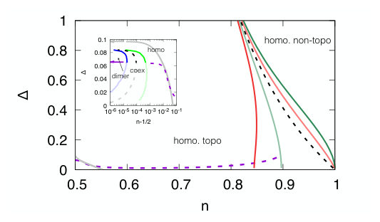
<figcaption class="paper-figure-caption"><b>Fig 1.</b> FIG. 1: a) Phase diagram for λ = 2. Red and green lines results from Maxwell construction respectively separating non-topological and topological homoge- neous phases. Black dashed line marks the occurrence of topological criterion when λ = 0.0 and it is the lo- cus of the first order phase transition when λ &gt; 0. Light green (light red) lines are spinodal lines of the red (green) topological (non- topological) homoge- neous phases. Purple dashed line marks the instability line of the homogeneous topological phase towards a CDW (see Sec. III C); this line meets the spinodal line of the homogeneous topological phase at n ≈0.9 and ∆≈0.1, and merges with it. Grey line is the spin- odal line of...</figcaption>
</figure>
<figure class="paper-figure-card">
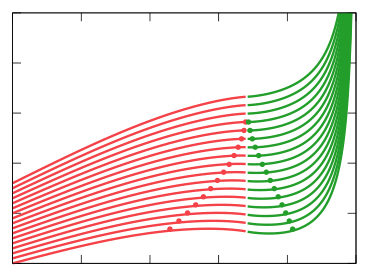
<figcaption class="paper-figure-caption"><b>Fig 2.</b> FIG. 2: The chemical potential versus the density of electrons n at ∆= 0.8t and for several equally spaced values of λ, from λ = 1.0 (top curve) to λ = 4.0 (bottom curve). On the green branches (non-topo) the topological criterion of the Kitaev model is not satisfied, while it is met on the red branches (topo). Small dots marks the cohexistence region by Maxwell’s construction. The border between non-topo and topo branches do not depend on λ as predicted by Eq. (6).</figcaption>
</figure>
<figure class="paper-figure-card">
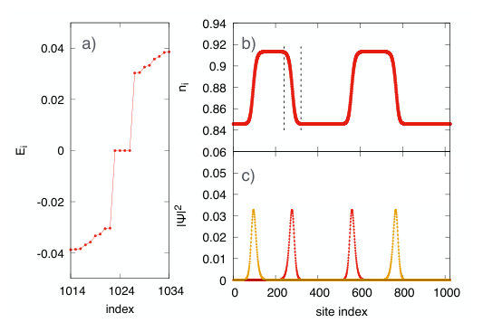
<figcaption class="paper-figure-caption"><b>Fig 3.</b> FIG. 3: Properties of a numerical solution obtained in the coexistence region of Fig. 1, for λ = 2, ∆= 0.5, with periodic boundary conditions. a) Eigenvalues showing 4 zero modes. b) Charge modulation in the N = 1024 chain. The interface located between two dashed lines is sampled in Fig. 4. c) The modulus squared of the Majorana fermion wave function, as a function of the site index (colors mark the pairwise re- lated zero-modes).</figcaption>
</figure>
<figure class="paper-figure-card">
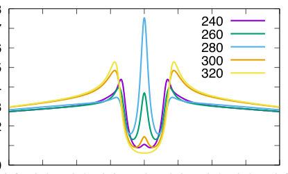
<figcaption class="paper-figure-caption"><b>Fig 4.</b> FIG. 4: Local spectral density across the interface shown in Fig. 3 b) (dashed lines), for λ = 2, ∆= 0.5 and a broadening 7 × 10−3. The numerical labels of the various lines identify the site along the chain where the corresponding spectral density is found.</figcaption>
</figure>
<figure class="paper-figure-card">
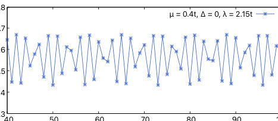
<figcaption class="paper-figure-caption"><b>Fig 5.</b> FIG. 5: A charge-density wave generated by the Peierls instability. Here, t = 1, µ = 0.4 (i.e., n ≈0.55), ∆= 0, λ = 2.15, and N = 200. The charge is expressed in units of the electron charge e. The density profile results from computational minimization of the free energy.</figcaption>
</figure>
</div>

<p><strong>Summary.</strong> The paper explores how an electron-phonon interaction can induce phase separation within a topological superconductor model. This phase separation creates internal interfaces that host Majorana zero modes, allowing for the realization of these exotic quasiparticles in the bulk material. The findings suggest a pathway to engineer topological superconductivity using lattice coupling.</p>
<p><strong>Why it may be interesting.</strong> This work provides a concrete mechanism—phase separation driven by electron-lattice coupling—for realizing topological boundary states (Majorana fermions) in a bulk material without needing engineered physical terminations, which is highly relevant for solid-state quantum devices.</p>
<details>
<summary>Detailed structure</summary>
<p><strong>Main problem.</strong> The study investigates whether Majorana fermions can emerge within the bulk of a superconducting system, away from physical boundaries, due to self-generated interfaces.</p>
<p><strong>Main result.</strong> Majorana fermions are found to exist at internal interfaces formed when the superconducting material phase-separates into regions with distinct topological invariants. These interfaces host zero-energy modes even under periodic boundary conditions.</p>
<p><strong>Method.</strong> The analysis involves generalizing the Kitaev model by coupling electron density to a classical elastic field, followed by solving self-consistency equations and analyzing the resulting phase diagram in real space.</p>
<p><strong>Model / system.</strong> The system is modeled as a 1D topological superconductor (Kitaev model generalization) coupled to an elastic lattice field. The Hamiltonian includes hopping, pairing, chemical potential terms, and density-dependent coupling to the lattice.</p>
<p><strong>Key observables.</strong> Zero-energy modes in the spectrum (Majorana fermions), local spectral density showing zero-bias peaks, and the phase diagram illustrating coexistence regions.</p>
<p><strong>Important parameters / regimes.</strong> Coupling strength ($\lambda$), electron density ($n$), stiffness ($K$), and superconducting gap parameters ($\Delta$, $t$).</p>
<p><strong>Assumptions / limitations.</strong> The analysis is performed at zero temperature ($T=0$) and often relies on simplifying the problem to homogeneous or dimerized phases in reciprocal space for initial calculations.</p>
<p><strong>Figures summary.</strong> Figures illustrate phase diagrams showing topological/non-topological coexistence regions, spectral plots confirming zero modes at interfaces, and density profiles demonstrating polaron trapping at these boundaries.</p>
<p><strong>Paper structure.</strong> The paper progresses by first establishing the generalized model Hamiltonian, deriving self-consistency conditions, analyzing the homogeneous phase transition, and finally using real-space numerical solutions to demonstrate Majorana formation within the coexistence region of the phase diagram.</p>
</details>
<details>
<summary>Abstract</summary>
<p>The Kitaev model describing a one-dimensional topological superconducting chain is known to support two Majorana fermions localized at the systems endpoints when the parameters are tuned to the topological phase. In this work, we investigate the possibility that Majorana fermions may also emerge away from the physical boundaries of the chain. To this purpose, we generalize the Kitaev model by incorporating a local coupling between the electronic density and a classical elastic (lattice) field. This electron-lattice interaction can induce phase separation between superconducting regions characterized by distinct topological invariants, thereby generating internal interfaces that host Majorana bound states. Under these conditions, a dilute gas of Majorana fermions can be realized in the bulk of the system.</p>
</details>
<p><sub><a href="#top">↑ back to top</a></sub></p>

<p><a id="paper-2606.10252"></a></p>
<h3 id="generalization-of-a-localized-state-formation-mechanism-in-finite-lattices-with-interaction-nonlinearity"><a href="http://arxiv.org/abs/2606.10252v1">Generalization of a localized-state formation mechanism in finite lattices with interaction nonlinearity</a></h3>
<p><strong>Authors:</strong> Huajie Song, Haitao Xu<br>
<strong>Type:</strong> theory · <strong>Category:</strong> disordered systems and neural networks · <strong>PDF:</strong> <a href="https://arxiv.org/pdf/2606.10252v1">https://arxiv.org/pdf/2606.10252v1</a><br>
<strong>Analysis basis:</strong> full PDF text, analyzed in chunks
<strong>Topic relevance:</strong> <code>Frenkel-Kontorova</code> <strong>3/5</strong> · <code>driven-dissipative phase transition</code> <strong>2/5</strong> · <code>non-equilibrium universality</code> <strong>2/5</strong> · <code>Keldysh / 2PI / non-Gaussian methods</code> <strong>1/5</strong> · <code>Kondo &amp; dissipative impurity</code> <strong>1/5</strong> · <code>analog quantum simulation</code> <strong>1/5</strong> · <code>methods for driven-dissipative</code> <strong>1/5</strong> · <code>non-equilibrium dynamics</code> <strong>1/5</strong></p>
<div class="figure-strip-hint">↔ Scroll figures horizontally</div>
<div class="paper-figures-scroll">
<figure class="paper-figure-card">
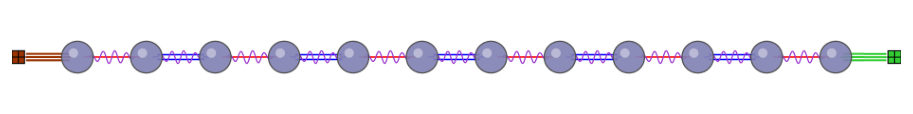
<figcaption class="paper-figure-caption"><b>Fig 1.</b> Figure 1: Schematic of the finite FPUT-type diatomic chain (1) of length 2n. The masses are identical; the straight single and double lines denote the linear interior springs k1, k2, the springs at the two ends denote the clamped boundary springs k3,1, k3,2 to fixed walls, and the curved springs denote the cubic FPUT nonlinearity, which acts on the relative displacement of each pair of connected sites.</figcaption>
</figure>
<figure class="paper-figure-card">
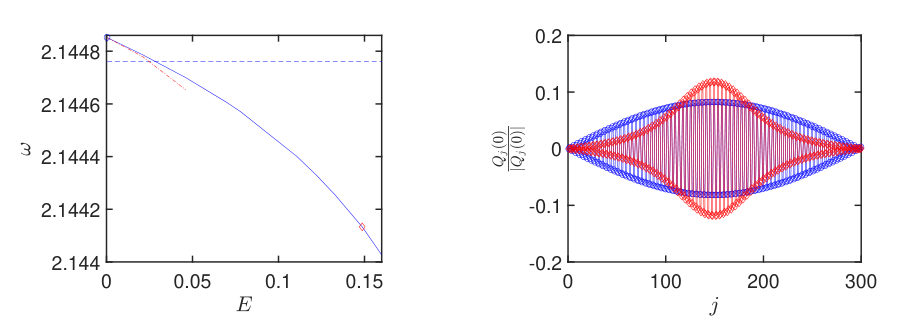
<figcaption class="paper-figure-caption"><b>Fig 2.</b> Figure 2: Regime (R1) (middle-localized), 2n = 200, k1 = 1, k2 = 2.3, k3,1 = 1.3, k3,2 = 3.5. (a) The branch frequency ω (solid) and its leading approximation (30) (dash–dotted) as functions of the energy E, drift downward from the lower optical edge √2k2 (dashed horizontal). (b) The normalized periodic orbit Q(0) at small (blue) and large (red) amplitude: the uniformly extended near-edge mode evolves into a state concentrated in the middle of the chain.</figcaption>
</figure>
<figure class="paper-figure-card">
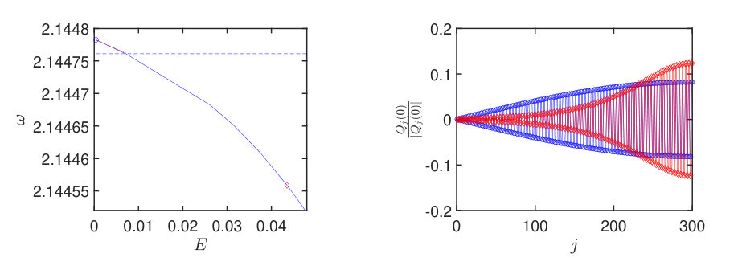
<figcaption class="paper-figure-caption"><b>Fig 3.</b> Figure 3: Regime (R2) (edge localization), 2n = 200, k1 = 1, k2 = 2.3, k3,1 = 1.3, k3,2 = 4.6 = 2k2. (a) The branch frequency ω (solid) and its leading approximation (40) (dash–dotted) drift down from the lower optical edge (dashed horizontal). (b) The normalized periodic orbit Q(0) at small (blue) and large (red) amplitude: the uniformly extended mode evolves into a state concentrated at the right boundary.</figcaption>
</figure>
</div>

<p><strong>Summary.</strong> This theoretical paper analyzes the transition from extended linear modes to localized states in finite lattices subjected to cubic FPUT interaction nonlinearity. By developing a general framework, the authors successfully extend prior methods to this complex nonlinear case. The key finding is the determination of a quantitative convergence radius $\epsilon = \Theta(1/\sqrt{n})$, providing deep insight into the stability and localization scale of these wave solutions.</p>
<p><strong>Why it may be interesting.</strong> The study of localization transitions driven by nonlinearity is central to understanding nonlinear wave phenomena in physical systems, which has parallels with Anderson localization and energy band structure analysis relevant to quantum dynamics.</p>
<details>
<summary>Detailed structure</summary>
<p><strong>Main problem.</strong> The paper investigates the mechanism by which time-periodic, spatially localized states form from an extended linear mode near a band edge when a nonlinearity is gradually introduced.</p>
<p><strong>Main result.</strong> It establishes that this formation process can be quantitatively analyzed for the FPUT interaction nonlinearity, yielding a convergence radius $\epsilon = \Theta(1/\sqrt{n})$ below which the mode remains extended.</p>
<p><strong>Method.</strong> The analysis employs perturbation theory combined with Lyapunov–Schmidt reduction to continue an orbit from the linear spectrum into the nonlinear regime.</p>
<p><strong>Model / system.</strong> The system is a finite one-dimensional diatomic lattice governed by equations of motion involving both linear spring forces and cubic FPUT interaction nonlinearity. The method is claimed to be model-independent for other short-range nonlinearities and higher dimensions.</p>
<p><strong>Key observables.</strong> Radius of convergence ($\epsilon$), frequency shift ($\omega_{<2>}$), and the profile concentration (middle vs. edge localization).</p>
<p><strong>Important parameters / regimes.</strong> Chain length ($2n$), nonlinearity strength, and spectral gaps which scale as $\Theta(1/n^2)$ for finite lattices.</p>
<p><strong>Assumptions / limitations.</strong> The analysis is restricted to the diatomic chain as a test case; it assumes specific structural relations between different nonlinearities (e.g., FPUT vs. on-site).</p>
<p><strong>Figures summary.</strong> Figures illustrate schematic representations of the finite FPUT-type diatomic chain, showing the evolution of periodic orbits from extended states towards central or boundary concentrations.</p>
<p><strong>Paper structure.</strong> The paper builds by first establishing a framework transferable from simple on-site nonlinearities to complex FPUT interactions. It then uses spectral analysis and perturbation theory (Lyapunov–Schmidt reduction) to calculate convergence radii, culminating in inductive estimates that confirm the $\Theta(1/\sqrt{n})$ scaling.</p>
</details>
<details>
<summary>Abstract</summary>
<p>We study how time-periodic, spatially localized states are born from the linear spectrum of a \emph{finite} lattice as the nonlinearity is switched on. In earlier work we treated this question for a diatomic chain with on-site nonlinearity and developed a framework that continues a near-edge linear mode in amplitude and controls the resulting perturbation series uniformly in the chain length. The present paper shows that the same framework applies to the more difficult case of Fermi--Pasta--Ulam--Tsingou (FPUT) interaction nonlinearity. The key is a structural relation between the FPUT and on-site nonlinearities, which allows the estimates obtained in the on-site setting to be transferred to the FPUT setting. As before, the analysis yields a quantitative radius of convergence, $\eps=Θ(1/\sqrt{n})$ for a chain of length $2n$, below which the near-edge mode stays extended and above which the orbit localizes and its frequency leaves the band. The diatomic chain is used only as a test case; both the formation mechanism and the method are model-independent and are expected to extend to other short-range nonlinearities and to higher dimensions.</p>
</details>
<p><sub><a href="#top">↑ back to top</a></sub></p>

<p><a id="paper-2606.11128"></a></p>
<h3 id="roughness-robust-surface-altermagnetism-in-math1061math-antiferromagnets"><a href="http://arxiv.org/abs/2606.11128v1">Roughness-robust surface altermagnetism in $PT$ antiferromagnets</a></h3>
<p><strong>Authors:</strong> K. D. Belashchenko<br>
<strong>Type:</strong> theory · <strong>Category:</strong> other · <strong>PDF:</strong> <a href="https://arxiv.org/pdf/2606.11128v1">https://arxiv.org/pdf/2606.11128v1</a><br>
<strong>Analysis basis:</strong> full PDF text, analyzed in chunks
<strong>Topic relevance:</strong> <code>exotic spin models in light-matter</code> <strong>3/5</strong> · <code>spintronics-quantum-optics interface</code> <strong>3/5</strong> · <code>Keldysh / 2PI / non-Gaussian methods</code> <strong>1/5</strong> · <code>analog quantum simulation</code> <strong>1/5</strong> · <code>correlated / nonlocal dissipation</code> <strong>1/5</strong> · <code>driven-dissipative phase transition</code> <strong>1/5</strong> · <code>methods for driven-dissipative</code> <strong>1/5</strong> · <code>non-equilibrium dynamics</code> <strong>1/5</strong></p>
<div class="figure-strip-hint">↔ Scroll figures horizontally</div>
<div class="paper-figures-scroll">
<figure class="paper-figure-card">
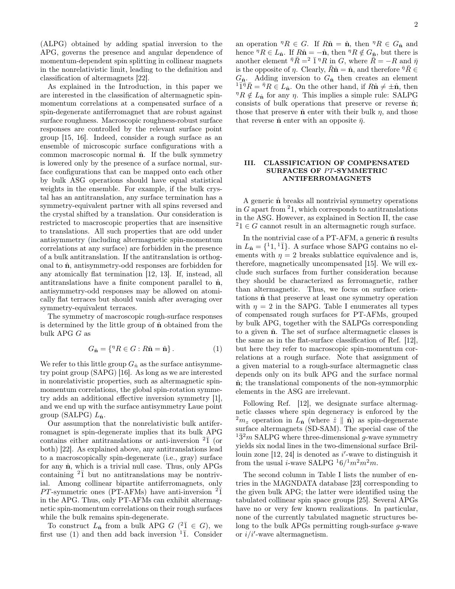
<figcaption class="paper-figure-caption"><b>Fig 1.</b> Low-resolution page preview, page 2</figcaption>
</figure>
<figure class="paper-figure-card">
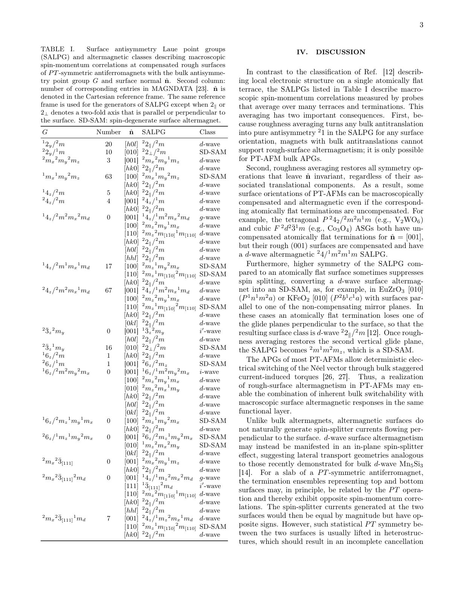
<figcaption class="paper-figure-caption"><b>Fig 2.</b> Low-resolution page preview, page 3</figcaption>
</figure>
<figure class="paper-figure-card">
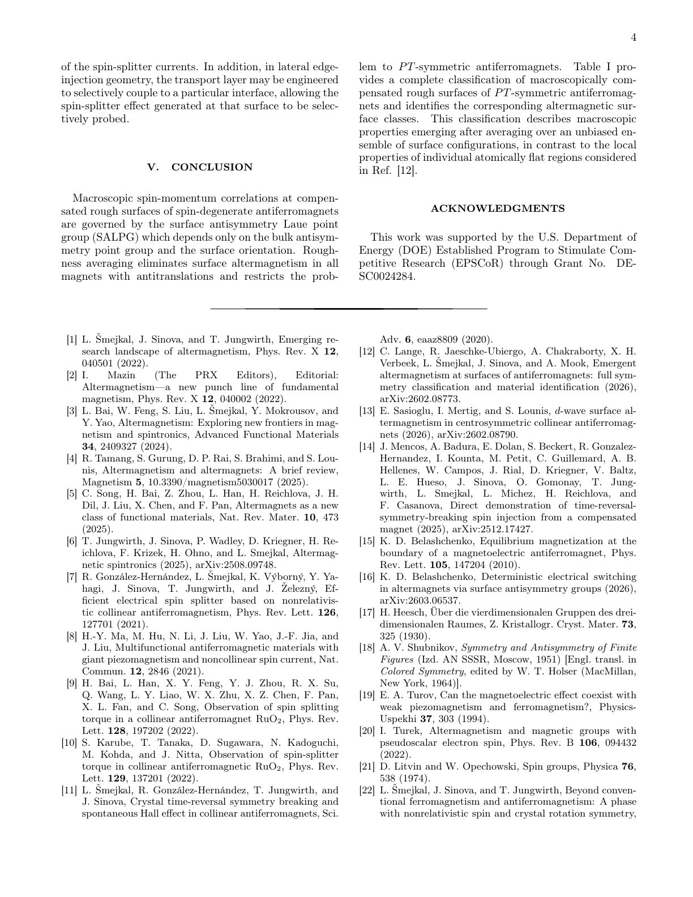
<figcaption class="paper-figure-caption"><b>Fig 3.</b> Low-resolution page preview, page 4</figcaption>
</figure>
<figure class="paper-figure-card">
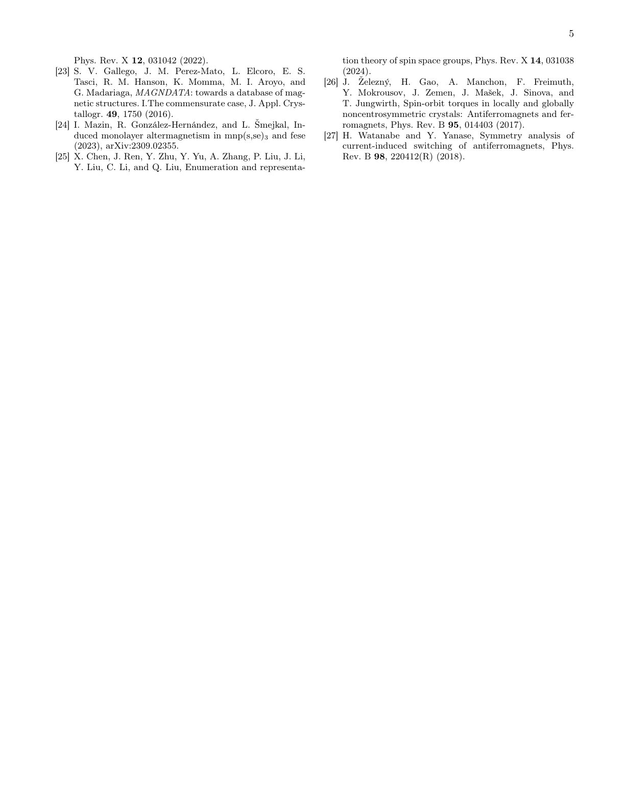
<figcaption class="paper-figure-caption"><b>Fig 4.</b> Low-resolution page preview, page 5</figcaption>
</figure>
</div>

<p><strong>Summary.</strong> This paper develops a symmetry-based framework to classify surface altermagnetism that remains robust even on rough crystal surfaces. It proves that this phenomenon is restricted to PT-symmetric antiferromagnets by analyzing the Surface Antisymmetry Laue Point Group (SALPG). The work provides a detailed classification scheme linking bulk symmetries and surface orientation to observable magnetic transport properties.</p>
<p><strong>Why it may be interesting.</strong> While focused on condensed matter magnetism, the rigorous application of group theory (point/space groups) to determine emergent macroscopic properties from averaging over disordered geometries is highly relevant to understanding open quantum systems and boundary effects in AMO physics.</p>
<details>
<summary>Detailed structure</summary>
<p><strong>Main problem.</strong> The study addresses the symmetry governing macroscopic spin-momentum correlations (altermagnetism) that persist when averaging over compensated, rough surfaces, moving beyond flat terrace approximations.</p>
<p><strong>Main result.</strong> Roughness-robust surface altermagnetism is restricted to PT-symmetric antiferromagnets, whose symmetries are classified by the Surface Antisymmetry Laue Point Group (SALPG).</p>
<p><strong>Method.</strong> The analysis employs symmetry group theory, specifically deriving the SALPG from the bulk Antisymmetry Point Group (APG) using the little group of the surface normal.</p>
<p><strong>Model / system.</strong> The system under study is PT-symmetric antiferromagnets (PT-AFMs), focusing on how surface termination and roughness affect magnetic symmetry properties. The theory models macroscopic spin-momentum correlations surviving averaging over rough surfaces.</p>
<p><strong>Key observables.</strong> Altermagnetic classes (e.g., d-wave, SD-SAM) determined by the SALPG; spin splitting magnitude and direction.</p>
<p><strong>Important parameters / regimes.</strong> The surface normal vector ($\hat{n}$); the bulk Antisymmetry Point Group (APG).</p>
<p><strong>Assumptions / limitations.</strong> The analysis assumes nonrelativistic properties and that macroscopic responses are averaged over an unbiased ensemble of rough surfaces, which restricts the phenomenon to PT-AFMs.</p>
<p><strong>Figures summary.</strong> Table I provides a comprehensive classification linking SALPGs, altermagnetic classes, bulk APGs, and surface normals for PT-AFMs.</p>
<p><strong>Paper structure.</strong> The paper first establishes that roughness averaging necessitates using the SALPG. It then derives constraints showing that only PT-AFMs support this robust effect. Finally, it provides a detailed classification table linking symmetry groups to observable altermagnetic states.</p>
</details>
<details>
<summary>Abstract</summary>
<p>Surface altermagnetism extends spin splitting beyond bulk altermagnets through symmetry reduction at surfaces and interfaces. An existing classification applies to the local symmetry of atomically flat surface terraces. The present paper addresses the symmetry of macroscopic spin-momentum correlations that survive averaging over compensated rough surfaces. These correlations are governed by the surface antisymmetry Laue point group. Rough-surface altermagnetism is forbidden at any surface of a magnet whose antisymmetry space group contains antitranslations, and the classification therefore reduces to $PT$-symmetric antiferromagnets. By restoring all symmetries leaving the surface normal invariant, roughness can generate compensated surface altermagnets from uncompensated flat terminations, increase the surface symmetry, or suppress spin splitting. By combining bulk switchability with altermagnetic surface transport properties, roughness-robust surface altermagnetism in $PT$-symmetric antiferromagnets provides a route toward spintronic functionality.</p>
</details>
<p><sub><a href="#top">↑ back to top</a></sub></p>

<p><a id="paper-2606.10470"></a></p>
<h3 id="electrical-spectroscopy-of-intervalley-relaxation-in-wsemath1065math-transistors"><a href="http://arxiv.org/abs/2606.10470v1">Electrical Spectroscopy of Intervalley Relaxation in WSe$_2$ Transistors</a></h3>
<p><strong>Authors:</strong> Katsunori Wakabayashi<br>
<strong>Type:</strong> both · <strong>Category:</strong> statistical mechanics · <strong>PDF:</strong> <a href="https://arxiv.org/pdf/2606.10470v1">https://arxiv.org/pdf/2606.10470v1</a><br>
<strong>Analysis basis:</strong> full PDF text, analyzed in chunks
<strong>Topic relevance:</strong> <code>methods for driven-dissipative</code> <strong>3/5</strong> · <code>non-equilibrium dynamics</code> <strong>3/5</strong> · <code>non-equilibrium universality</code> <strong>2/5</strong> · <code>Keldysh / 2PI / non-Gaussian methods</code> <strong>1/5</strong> · <code>correlated / nonlocal dissipation</code> <strong>1/5</strong> · <code>driven-dissipative phase transition</code> <strong>1/5</strong></p>
<div class="figure-strip-hint">↔ Scroll figures horizontally</div>
<div class="paper-figures-scroll">
<figure class="paper-figure-card">
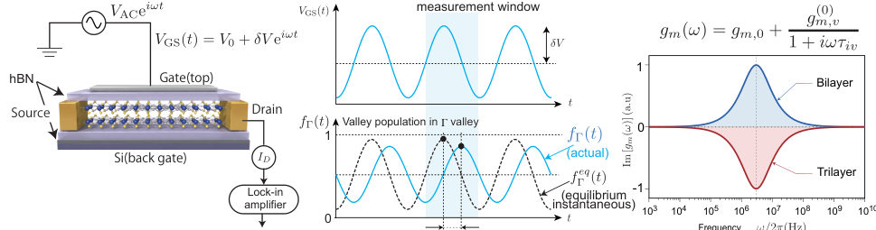
<figcaption class="paper-figure-caption"><b>Fig 1.</b> FIG. 1. Overview of transconductance spectroscopy of intervalley relaxation. (a) Schematic of a multilayer WSe2 transistor in dual-gate geometry with hBN dielectric [32, 33]. An AC gate voltage VGS(t) = V0 + δV eiωt drives the device; the drain current ID(ω) is detected by a lock-in amplifier to extract gm(ω) = dID(ω)/dVGS(ω). (b) Valley population fΓ(t) in the Γ valley (solid) compared to the instantaneous equilibrium value (dashed), illustrating the phase delay ∆t = ϕ/ω arising from the finite intervalley relaxation time τiv. (c) Predicted imaginary part of the valley transconductance Im[gm(ω)] for bilayer (blue) and trilayer (red) WSe2. Opposite-sign Lorentzian peaks centered at ωc = τ...</figcaption>
</figure>
<figure class="paper-figure-card">
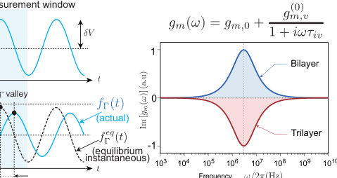
<figcaption class="paper-figure-caption"><b>Fig 2.</b> Figure 2 illustrates the physical picture: a gate-voltage step (VGS : V1 →V2) causes the charge to jump instan- taneously while fΓ exponentially relaxes toward the new equilibrium, producing a two-stage current response. Table I lists the numerical parameters used throughout this work. The effective masses and K–Γ splittings are taken from first-principles calculations [11, 13], and the mobilities are representative experimental values [6, 7]. The intervalley relaxation time τiv enters only as a free parameter; no specific numerical value is assumed in any figure.</figcaption>
</figure>
<figure class="paper-figure-card">
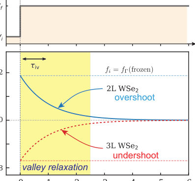
<figcaption class="paper-figure-caption"><b>Fig 3.</b> FIG. 2. Two-stage current response to a gate step ∆VGS = 0.2 V (upper panel) for bilayer (blue) and trilayer (red) WSe2 (lower panel, thick lines). Thin dashed lines (fΓ = fi, frozen) show the valley-frozen reference: charge responds instanta- neously (τRC ≪τiv) while fΓ remains at its pre-step value fi. Valley relaxation then drives the current toward ID(∞): over- shoot for the bilayer and undershoot for the trilayer, with a characteristic timescale τiv. The opposite-sign departures re- flect sgn(g0 m,v) reversing between layers.</figcaption>
</figure>
<figure class="paper-figure-card">
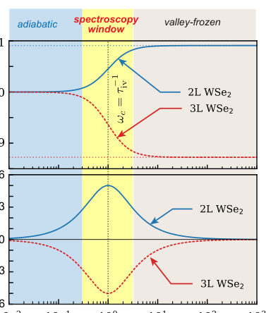
<figcaption class="paper-figure-caption"><b>Fig 4.</b> FIG. 3. Frequency-dependent transconductance for bilayer (solid, blue) and trilayer (dashed, red) WSe2 at T = 300 K, evaluated at the gate voltage where |g0 m,v| is maximum. Shaded regions mark three dynamical regimes: adiabatic (ωτiv ≪1), spectroscopy window (ωτiv ∼1, yellow), and valley-frozen (ωτiv ≫1). (a) Real part Re[gm(ω)]/g(0) m nor- malized to the dc value; dotted lines are the high-frequency limits gm,0/g(0) m . (b) Imaginary part Im[gm(ω)]/|g0 m,v|; the extremum at ωc = τ −1 iv (vertical dotted) has opposite sign for bilayer (g0 m,v &lt; 0) and trilayer (g0 m,v &gt; 0).</figcaption>
</figure>
<figure class="paper-figure-card">
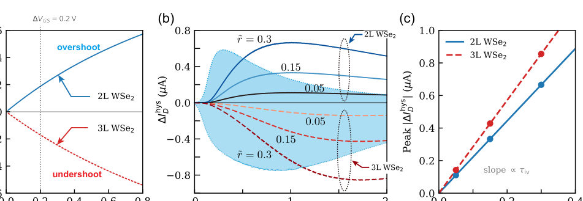
<figcaption class="paper-figure-caption"><b>Fig 5.</b> FIG. 4. Low-frequency fingerprints of delayed intervalley relaxation. (a) Signed transient amplitude ∆Itr D/ID(∞) vs gate- step size ∆VGS at T = 300 K, evaluated at the gate voltage of maximum |χv|. Bilayer (blue) overshoots and trilayer (red) undershoots, encoding sgn(g0 m,v); amplitudes grow linearly then saturate. The dotted line marks the ∆VGS = 0.2 V step of Fig. 2. (b) Hysteresis current ∆Ihys D (VGS) [Eq. (12)] for bilayer (solid, blue family) and trilayer (dashed, red family) at normalized sweep rates ˜r = rτiv = 0.05, 0.15, 0.30 (labeled). Opposite signs reflect sgn(χv) = sgn(∆KΓ); cyan dotted envelopes trace χv(VGS), confirming the profile correspondence. (c) Peak |∆Ihys D | vs...</figcaption>
</figure>
</div>

<p><strong>Summary.</strong> This work develops a novel electrical spectroscopy technique to measure the intervalley relaxation time ($\tau_{iv}$) in WSe$_2$ transistors. By analyzing three complementary signatures—AC transconductance, current transients, and hysteresis—the authors provide quantitative access to $\tau_{iv}$ using standard electronic measurements rather than complex ultrafast optics.</p>
<p><strong>Why it may be interesting.</strong> The use of dynamic response functions ($g_m(\omega)$) to probe relaxation rates ($\tau_{iv}$) is a classic problem in open quantum systems, linking transport measurements directly to the system's coherence or decay timescales.</p>
<details>
<summary>Detailed structure</summary>
<p><strong>Main problem.</strong> To establish a direct electrical spectroscopic method for measuring the intervalley relaxation time ($\tau_{iv}$) in WSe$_2$ transistors, bypassing reliance on ultrafast optical techniques.</p>
<p><strong>Main result.</strong> Three distinct electrical signatures—frequency-dependent transconductance, current transients, and sweep-rate hysteresis—were shown to provide quantitative access to $\tau_{iv}$.</p>
<p><strong>Method.</strong> The analysis extends an equilibrium valley-thermodynamics framework by modeling the time evolution of the $\Gamma$-valley carrier fraction using a single relaxation equation.</p>
<p><strong>Model / system.</strong> The system is multilayer WSe$_2$ field-effect transistors, where the valley population acts as a dynamic internal state variable governed by the relaxation rate $\tau_{iv}$.</p>
<p><strong>Key observables.</strong> Frequency-dependent transconductance $g_m(\omega)$, two-stage current transients (overshoot/undershoot), and sweep-rate-proportional hysteresis.</p>
<p><strong>Important parameters / regimes.</strong> Intervalley relaxation time ($\tau_{iv}$); characteristic frequency $\omega_c = 1/\tau_{iv}$; temperature dependence following a Bose–Einstein form.</p>
<p><strong>Assumptions / limitations.</strong> The analysis relies on extending the equilibrium valley-thermodynamics framework and using first-order approximations for slow gate sweeps to derive the hysteresis current.</p>
<p><strong>Figures summary.</strong> Figures illustrate the schematic measurement setup, the layer-dependent overshoot/undershoot in transients, Lorentzian peaks in $g_m(\omega)$ at $\omega_c$, and linear scaling of hysteresis current with sweep rate $|r|$.</p>
<p><strong>Paper structure.</strong> The paper develops a theoretical framework based on a relaxation equation for valley population, predicts three measurable electrical signatures (AC spectroscopy, DC transients, hysteresis), and demonstrates how these signatures allow quantitative extraction of $\tau_{iv}$ using standard RF/DC equipment.</p>
</details>
<details>
<summary>Abstract</summary>
<p>We show that the transconductance of multilayer WSe$_2$ field-effect transistors serves as a direct electrical spectrometer of the intervalley relaxation time $τ_{\rm iv}$, previously accessible only by ultrafast optical techniques. Extending an equilibrium valley-thermodynamics framework with a single relaxation equation for the $Γ$-valley carrier fraction $f_Γ(t)$, we predict three signatures: (i)~a Lorentzian transconductance $g_m(ω)=g_{m,0}+g_{m,v}^0/(1+iωτ_{\rm iv})$, whose imaginary part peaks at $ω_c=τ_{\rm iv}^{-1}$ with opposite signs for bilayer and trilayer; (ii)~a two-stage current transient after a gate step, exhibiting bilayer overshoot or trilayer undershoot; and (iii)~sweep-rate-proportional hysteresis whose gate-voltage profile and layer-number sign reversal distinguish valley from trap-induced dynamics. All three signatures provide quantitative electrical access to $τ_{\rm iv}$ with standard rf and dc instrumentation.</p>
</details>
<p><sub><a href="#top">↑ back to top</a></sub></p>

<p><a id="paper-2606.09989"></a></p>
<h3 id="quantum-geometric-origin-of-superfluid-weight-in-quasicrystals-with-critical-states"><a href="http://arxiv.org/abs/2606.09989v1">Quantum-geometric origin of superfluid weight in quasicrystals with critical states</a></h3>
<p><strong>Authors:</strong> Kazuma Saito, Ryo Okugawa, Yusuke Kato, Takami Tohyama<br>
<strong>Type:</strong> theory · <strong>Category:</strong> other · <strong>PDF:</strong> <a href="https://arxiv.org/pdf/2606.09989v1">https://arxiv.org/pdf/2606.09989v1</a><br>
<strong>Analysis basis:</strong> full PDF text, analyzed in chunks
<strong>Topic relevance:</strong> <code>analog quantum simulation</code> <strong>3/5</strong> · <code>Keldysh / 2PI / non-Gaussian methods</code> <strong>2/5</strong> · <code>driven-dissipative phase transition</code> <strong>2/5</strong> · <code>Kondo &amp; dissipative impurity</code> <strong>1/5</strong> · <code>methods for driven-dissipative</code> <strong>1/5</strong> · <code>non-equilibrium dynamics</code> <strong>1/5</strong></p>
<div class="figure-strip-hint">↔ Scroll figures horizontally</div>
<div class="paper-figures-scroll">
<figure class="paper-figure-card">
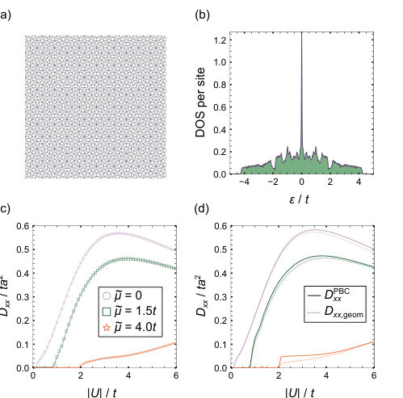
<figcaption class="paper-figure-caption"><b>Fig 1.</b> FIG. 1. (a) The Ammann-Beenker quasicrystal with 2827 sites. Every vertex is the atomic site and each edge represents nearest-neighbor hopping link. We set the link length a to unity for these calculations. (b) The DOS per site of the tight-binding Hamiltonian without the interaction. (c) and (d) Superfluid weight obtained with (c) open boundary and (d) periodic boundary conditions at zero temperature as a function of |U|/t for each ˜µ.</figcaption>
</figure>
<figure class="paper-figure-card">
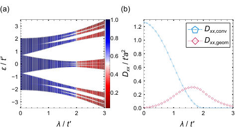
<figcaption class="paper-figure-caption"><b>Fig 2.</b> FIG. 2. (a) Evolution of the energy spectrum of the AAH model. The color bar represents the multifractal dimension D2. (b) Conventional superfluid weight Dxx,conv (blue) and geometric one Dxx,geom (red) for U = −1.5t′ at zero temper- ature.</figcaption>
</figure>
</div>

<p><strong>Summary.</strong> This theoretical paper investigates how the geometric structure of quasicrystals influences their superconducting properties by calculating the superfluid weight. By separating the total weight into conventional and geometric parts, the authors demonstrate that in systems with critical electronic states, the quantum geometry provides the dominant contribution to superconductivity. This highlights a deep interplay between lattice topology and superconducting pairing mechanisms.</p>
<p><strong>Why it may be interesting.</strong> This work connects concepts from topological physics (geometric contributions to transport coefficients) with strongly correlated electron models (Hubbard model on quasiperiodic lattices), which is highly relevant for understanding exotic superconductivity mechanisms beyond simple mean-field theories.</p>
<details>
<summary>Detailed structure</summary>
<p><strong>Main problem.</strong> The study investigates the geometric origin of superfluid weight in quasiperiodic systems that host critical electronic states at zero temperature.</p>
<p><strong>Main result.</strong> The research finds that the superfluid weight is dominated by a quantum geometric contribution ($  ext{D}_{\mu
u,  ext{geom}}$) in these quasicrystals, revealing a fundamental link between superconductivity and critical states.</p>
<p><strong>Method.</strong> The authors employ both real-space (Open Boundary Conditions) and momentum-space (Periodic Boundary Conditions) approaches to calculate the superfluid weight using the Kubo formula applied to the Bogoliubov-de Gennes Hamiltonian.</p>
<p><strong>Model / system.</strong> The system under study is quasiperiodic, exemplified by the Ammann-Beenker quasicrystal or modeled via the Aubry-André-Harper (AAH) model. Superconductivity is analyzed using an s-wave pairing assumption within a Hubbard-type framework.</p>
<p><strong>Key observables.</strong> Superfluid weight ($   ext{D}<em>{\mu
u}$), conventional contribution ($  ext{D}</em>{\mu
u,  ext{conv}}$), and geometric contribution ($  ext{D}_{\mu
u,  ext{geom}}$).</p>
<p><strong>Important parameters / regimes.</strong> Interaction strength ($U$), chemical potential ($  ilde{\mu}$), and the AAH model parameter $\lambda/t'$ (especially near the transition point $\lambda = 2t'$).</p>
<p><strong>Assumptions / limitations.</strong> The analysis separates the total superfluid weight into conventional and geometric parts, assuming s-wave pairing symmetry.</p>
<p><strong>Figures summary.</strong> Figure 2(a) likely shows the energy spectrum and multifractal dimension ($D_2$) dependence on the AAH parameter $\lambda/t'$, illustrating the transition between different state regimes.</p>
<p><strong>Paper structure.</strong> The paper systematically analyzes the superfluid weight calculation using both real-space (OBC) and momentum-space (PBC) techniques. It compares the conventional and geometric contributions, demonstrating that the geometric term dominates when critical states are present in the quasicrystal structure.</p>
</details>
<details>
<summary>Abstract</summary>
<p>A distinctive feature of many quasiperiodic systems is the presence of critical states that are neither extended nor exponentially localized. We investigate the geometric effect on the superfluid weight in quasiperiodic systems with critical states at zero temperature. We employ both real-space and momentum-space approaches to superfluid weight in quasicrystals, which allows us to separate the conventional and quantum geometric contributions. We find that the superfluid weight is dominated by the geometric contribution in quasiperiodic systems with critical states. This finding reveals a fundamental interplay between superconductivity and critical states in quasicrystals.</p>
</details>
<p><sub><a href="#top">↑ back to top</a></sub></p>

<p><a id="paper-2606.10482"></a></p>
<h3 id="strain-programmable-exciton-diffusion-in-moire-heterostructures"><a href="http://arxiv.org/abs/2606.10482v1">Strain-programmable exciton diffusion in moiré heterostructures</a></h3>
<p><strong>Authors:</strong> Chiho Song, Chiranjit Mondal, Jaebin Lee, Kenji Watanabe, Takashi Taniguchi, Bohm-Jung Yang, Jieun Lee<br>
<strong>Type:</strong> both · <strong>Category:</strong> other · <strong>PDF:</strong> <a href="https://arxiv.org/pdf/2606.10482v1">https://arxiv.org/pdf/2606.10482v1</a><br>
<strong>Analysis basis:</strong> full PDF text, analyzed in chunks
<strong>Topic relevance:</strong> <code>non-equilibrium dynamics</code> <strong>3/5</strong> · <code>analog quantum simulation</code> <strong>2/5</strong> · <code>driven-dissipative phase transition</code> <strong>1/5</strong> · <code>methods for driven-dissipative</code> <strong>1/5</strong> · <code>non-equilibrium universality</code> <strong>1/5</strong> · <code>quantum optics experiment</code> <strong>1/5</strong></p>
<div class="figure-strip-hint">↔ Scroll figures horizontally</div>
<div class="paper-figures-scroll">
<figure class="paper-figure-card">
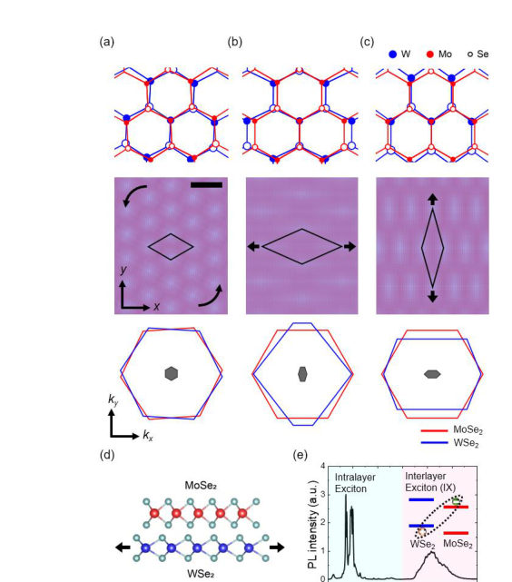
<figcaption class="paper-figure-caption"><b>Fig 1.</b> FIG. 1. Strain-induced moiré superlattices. (a–c) Upper: Stacked crystal structures of twisted (a), ZZ- strained (b), and AC-strained (c) WSe2-MoSe2 heterostructures. Middle: Corresponding moiré superlattices with unit cells indicated as a guide to eyes. Scale bar is 200 nm. Lower: Monolayer MoSe2 (red) and WSe2 (blue) BZs plotted together with the moiré BZs (gray) in reciprocal space. (d) Schematic of WSe2-MoSe2 heterostructure with uniaxial strain applied to bottom WSe2 layer. (e) PL spectrum of intra- and interlayer excitons in sample A. Inset: Type- II band alignment of WSe2-MoSe2 heterostructure and interlayer exciton (IX) formation. The spatial uniformity of strained moiré...</figcaption>
</figure>
<figure class="paper-figure-card">
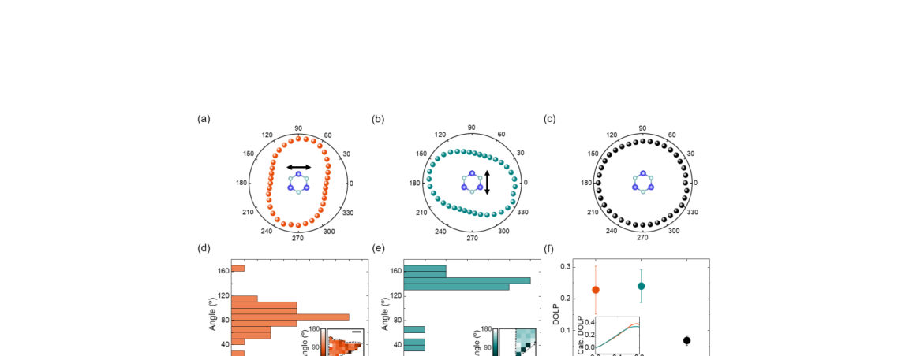
<figcaption class="paper-figure-caption"><b>Fig 2.</b> FIG. 2. Linearly polarized IX emission. (a–c) Linear polarizations of IX in ZZ-strained (a), AC-strained (b), and unstrained (c) heterostructures. Black arrows indicate the applied strain directions. (d, e) Histograms of linear polarization directions in ZZ-strained (d) and AC-strained (e) samples. Insets: Position-dependent linear polarization directions collected from the corresponding heterostructure areas. Scale bars are 5 µm in (d) and 2 µm in (e). (f) Averaged degree of linear polarization (DOLP) defined as (𝐼𝑚𝑎𝑥 − 𝐼𝑚𝑖𝑛)/(𝐼𝑚𝑎𝑥+ 𝐼𝑚𝑖𝑛) for ZZ-strained, AC- strained, and unstrained (twisted) samples. Inset: Calculated DOLP as a function of strain level along ZZ and AC directions. the...</figcaption>
</figure>
<figure class="paper-figure-card">
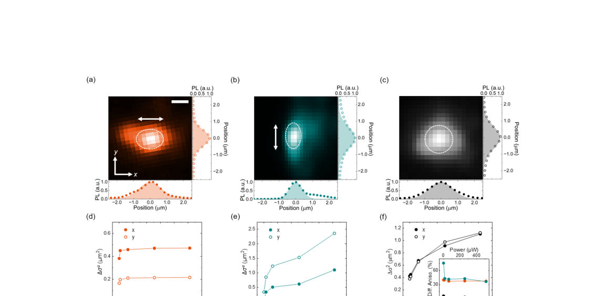
<figcaption class="paper-figure-caption"><b>Fig 3.</b> FIG. 3. Anisotropic IX diffusion. (a–c) Upper: Spatial PL maps of IX diffusion in ZZ-strained (a), AC-strained (b), and unstrained (c) heterostructures at the excitation laser power of 1 μW, with the line profiles along the 𝑥- and 𝑦-axis in corresponding heterostructures. White arrows indicate the applied strain directions. Dashed lines are a guide to eyes. Scale bar is 1 μm. Gaussian fitting functions are plotted as shaded areas. (d–f) Power dependence of the differential squared width ∆𝜎2 along 𝑥- and 𝑦-axis in ZZ-strained (d), AC-strained (e), and unstrained (f) heterostructures. Inset: Diffusion anisotropy as a function of power for ZZ-strained (orange), AC-strained (dark cyan), and...</figcaption>
</figure>
<figure class="paper-figure-card">
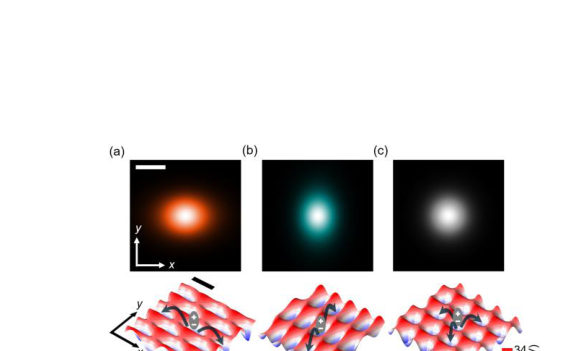
<figcaption class="paper-figure-caption"><b>Fig 4.</b> FIG. 4. Simulations of IX diffusion and moiré potential landscapes. (a–c) Upper: Calculated spatial steady-state IX distributions in ZZ-strained (a), AC- strained (b), and twisted (c) heterostructures. Scale bar is 0.5 µm. Lower: Moiré potential landscapes plotted for corresponding heterostructures. Scale bar is 50 nm. Black arrows indicate preferred IX hopping directions. strained, and unstrained conditions. Clear anisotropy of IX diffusion is observed for both the ZZ- and AC- strained heterostructures. The diffusion anisotropy obtained from the simulation was 0.24 (ZZ) and 0.25 (AC) under a strain level of 0.3 %. The resemblance of the simulation with the experiment is striking,...</figcaption>
</figure>
</div>

<p><strong>Summary.</strong> This work demonstrates that applying controlled strain to WSe2-MoSe2 moiré heterostructures acts as a powerful tool to break rotational symmetry. This symmetry breaking results in two key effects: the emergence of linearly polarized interlayer exciton emission, and highly anisotropic diffusion pathways for these excitons. These findings open new avenues for engineering vdW logic devices.</p>
<p><strong>Why it may be interesting.</strong> The ability to use mechanical strain as a precise knob to engineer electronic band structure symmetries and control quantum transport pathways is highly relevant for designing artificial quantum materials and excitonic devices.</p>
<details>
<summary>Detailed structure</summary>
<p><strong>Main problem.</strong> To explore strain tuning as a versatile tool for designing moiré superlattices and programming excitonic transport in van der Waals (vdW) heterostructures.</p>
<p><strong>Main result.</strong> Strain significantly breaks the $C_3$ rotational symmetry of the moiré lattice, leading to measurable linear polarization and anisotropic diffusion of interlayer excitons along the strain direction.</p>
<p><strong>Method.</strong> The study combines optical measurements (PL spectroscopy for polarization and diffusion mapping) with theoretical modeling (solving Fokker-Planck equations for exciton density evolution).</p>
<p><strong>Model / system.</strong> The physical system is WSe2-MoSe2 heterostructures forming moiré superlattices. The key mechanism involves applying controlled uniaxial or biaxial strain to modify the lattice geometry and break inherent symmetries.</p>
<p><strong>Key observables.</strong> Degree of Linear Polarization (DOLP), anisotropic exciton diffusion length ($\sigma_{IX}$), and the polarization-dependent interlayer exciton emission intensity.</p>
<p><strong>Important parameters / regimes.</strong> The magnitude and type of applied uniaxial/biaxial strain (e.g., 0.2% strain).</p>
<p><strong>Assumptions / limitations.</strong> The observed polarization and transport anisotropy are directly linked to the symmetry breaking mechanism induced by external strain, which modifies the moiré exciton wavefunctions.</p>
<p><strong>Figures summary.</strong> Figures demonstrate linear polarization of IX emission varying with strain level (DOLP), and PL maps show that IX diffusion is strongly anisotropic, extending further along the strain direction compared to unstrained samples.</p>
<p><strong>Paper structure.</strong> The paper establishes the potential of moiré heterostructures, details how strain breaks symmetry leading to polarized emission, and then quantifies this effect by showing strain-controlled anisotropic exciton diffusion both experimentally and via simulation.</p>
</details>
<details>
<summary>Abstract</summary>
<p>Moiré superlattices in van der Waals heterostructures have recently gained significant attention as an intriguing platform for studying correlated electronic systems and exotic excitonic properties. Previous reports, however, focused on creating and modulating moiré heterostructures through interlayer twisting or lattice constant mismatches, limiting controls on symmetry of heterostructures. In this work, we show that strain significantly alters the geometry of moiré superlattices by breaking the C3 rotational symmetry. We realize strain-induced moiré superlattices by intentionally regulating interlayer strain in WSe2-MoSe2 heterostructures, which is manifested by linearly polarized interlayer exciton emission coupled to the strain direction. Furthermore, interlayer exciton diffusion was preferentially guided along the stretched moiré superlattice orientations over a wide spatial range, reflecting the strain-modified moiré potentials. Our work highlights strain tuning as a versatile tool for designing moiré superlattices and programming excitonic transport, which opens pathways for van der Waals logic and information processing devices.</p>
</details>
<p><sub><a href="#top">↑ back to top</a></sub></p>

<p><a id="paper-2606.10420"></a></p>
<h3 id="superheating-field-of-clean-superconductors-near-the-type-i-type-ii-boundary-the-low-temperature-meissner-stability-limit-of-niobium"><a href="http://arxiv.org/abs/2606.10420v1">Superheating field of clean superconductors near the type-I--type-II boundary: the low-temperature Meissner stability limit of niobium</a></h3>
<p><strong>Authors:</strong> Takayuki Kubo<br>
<strong>Type:</strong> theory · <strong>Category:</strong> other · <strong>PDF:</strong> <a href="https://arxiv.org/pdf/2606.10420v1">https://arxiv.org/pdf/2606.10420v1</a><br>
<strong>Analysis basis:</strong> full PDF text, analyzed in chunks
<strong>Topic relevance:</strong> <code>Keldysh / 2PI / non-Gaussian methods</code> <strong>3/5</strong> · <code>correlated / nonlocal dissipation</code> <strong>2/5</strong> · <code>non-equilibrium dynamics</code> <strong>2/5</strong> · <code>driven-dissipative phase transition</code> <strong>1/5</strong> · <code>methods for driven-dissipative</code> <strong>1/5</strong></p>
<div class="figure-strip-hint">↔ Scroll figures horizontally</div>
<div class="paper-figures-scroll">
<figure class="paper-figure-card">
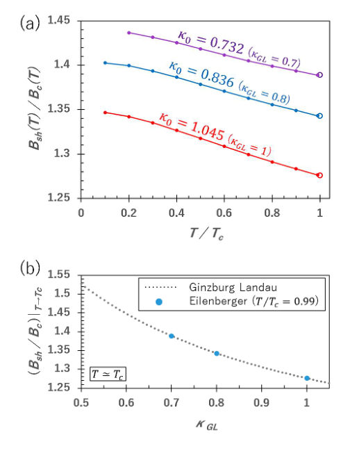
<figcaption class="paper-figure-caption"><b>Fig 1.</b> FIG. 1. (a) Temperature dependence of the superheating field for a clean low-κ superconductor. Filled symbols show Eilenberger results at fixed κ0; the corresponding κGL values are obtained from the near-Tc mapping. Open symbols at T/Tc = 1 show the corresponding GL values, which are valid in the limit T →Tc. (b) Superheating field near Tc as a function of κGL. The agreement with the GL result provides a check of the Eilenberger calculation in the near-Tc limit.</figcaption>
</figure>
</div>

<p><strong>Summary.</strong> This theoretical paper calculates the intrinsic superheating field limit ($B_{sh}$) for clean superconductors like Niobium using advanced Eilenberger theory. The result provides a significantly higher estimate for the Meissner stability limit compared to simpler Ginzburg-Landau extrapolations. This finding is crucial for designing high-performance superconducting accelerator cavities.</p>
<p><strong>Why it may be interesting.</strong> While focused on superconductivity, the rigorous nonlocal stability analysis techniques developed here (Eilenberger formalism) are highly sophisticated many-body tools that could inform models of quantum interfaces or non-equilibrium dynamics in other condensed matter systems.</p>
<details>
<summary>Detailed structure</summary>
<p><strong>Main problem.</strong> The paper calculates the low-temperature superheating field ($B_{sh}$) of clean superconductors near the type-I–type-II boundary.</p>
<p><strong>Main result.</strong> For Niobium (Nb) with $\kappa_{GL}=0.7$, the calculated $B_{sh}$ is $\simeq 290 	ext{ mT}$ at $T/T_c=0.2$, corresponding to an intrinsic Meissner-stability limit of about $67 	ext{ MV/m}$.</p>
<p><strong>Method.</strong> The calculation employs a self-consistent nonlinear nonlocal Eilenberger theory combined with linear stability analysis of the Meissner state.</p>
<p><strong>Model / system.</strong> The study focuses on clean superconductors, specifically Niobium (Nb), relevant for Superconducting Radio-Frequency (SRF) accelerator cavities operating in the Meissner state. The theoretical framework handles non-local current response.</p>
<p><strong>Key observables.</strong> $B_{sh}$ (superheating field), $E_{\max}^{acc}$ (maximum accelerating gradient).</p>
<p><strong>Important parameters / regimes.</strong> $\kappa_{GL}=0.7$, $T/T_c=0.2$, $B_{c0} \simeq 200 	ext{ mT}$.</p>
<p><strong>Assumptions / limitations.</strong> The stability analysis is assumed to be set by the one-dimensional instability ($ar{k}=0$). The calculation is limited to $T/T_c \ge 0.1$.</p>
<p><strong>Figures summary.</strong> Figure 1(a) compares Eilenberger results to GL values for $B_{sh}(T)/B_c(T)$ vs. temperature, while Figure 1(b) shows $B_{sh}$ dependence on $\kappa_{GL}$ near $T_c$.</p>
<p><strong>Paper structure.</strong> The paper develops the superheating-field problem using Eilenberger theory, compares results to GL approximations, calculates $B_{sh}(T)$ across the temperature range, and applies this limit to practical accelerator applications.</p>
</details>
<details>
<summary>Abstract</summary>
<p>We calculate the low-temperature superheating field $B_{\rm sh}$ of clean superconductors near the boundary between type-I and type-II superconductivity, with particular emphasis on Nb. The calculation is based on the self-consistent nonlinear nonlocal Eilenberger theory and the linear stability analysis of the Meissner state. For a Nb-like material with $κ_{\rm GL}=0.7$, we obtain $B_{\rm sh}\simeq 290\,{\rm mT}$ at $T/T_c=0.2$, using $B_{c0}\simeq 200\,{\rm mT}$. This value is substantially higher than the value obtained by naively extrapolating the Ginzburg--Landau result near $T_c$ to $T\ll T_c$. For a TESLA-shaped Nb accelerator cavity, it corresponds to an intrinsic Meissner-stability limit of about $67\,{\rm MV/m}$.</p>
</details>
<p><sub><a href="#top">↑ back to top</a></sub></p>

<p><a id="paper-2606.10043"></a></p>
<h3 id="distribution-of-majorana-modes-in-the-extended-range-kitaev-chain"><a href="http://arxiv.org/abs/2606.10043v1">Distribution of Majorana modes in the extended-range Kitaev chain</a></h3>
<p><strong>Authors:</strong> Pedro B. Widniczck, Gerardo Martínez<br>
<strong>Type:</strong> theory · <strong>Category:</strong> other · <strong>PDF:</strong> <a href="https://arxiv.org/pdf/2606.10043v1">https://arxiv.org/pdf/2606.10043v1</a><br>
<strong>Analysis basis:</strong> full PDF text, analyzed in chunks
<strong>Topic relevance:</strong> <code>analog quantum simulation</code> <strong>3/5</strong> · <code>driven-dissipative phase transition</code> <strong>2/5</strong> · <code>Kondo &amp; dissipative impurity</code> <strong>1/5</strong> · <code>methods for driven-dissipative</code> <strong>1/5</strong> · <code>non-equilibrium dynamics</code> <strong>1/5</strong></p>
<div class="figure-strip-hint">↔ Scroll figures horizontally</div>
<div class="paper-figures-scroll">
<figure class="paper-figure-card">
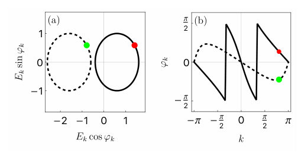
<figcaption class="paper-figure-caption"><b>Fig 1.</b> FIG. 1. (a) Evolution of the winding vector nk for the Kitaev chain around the origin (solid circle), yielding a phase with index ν = ±1, and a trivial curve (dashed circle) with a phase of ν = 0. (b) Distribution of the angle φk, as defined in Eq. (8), over the BZ. In the topological phase one observes the emergence of two discontinuities at ±l1 (solid line), while in the trivial phase there is no discontinuity (dashed line).</figcaption>
</figure>
<figure class="paper-figure-card">
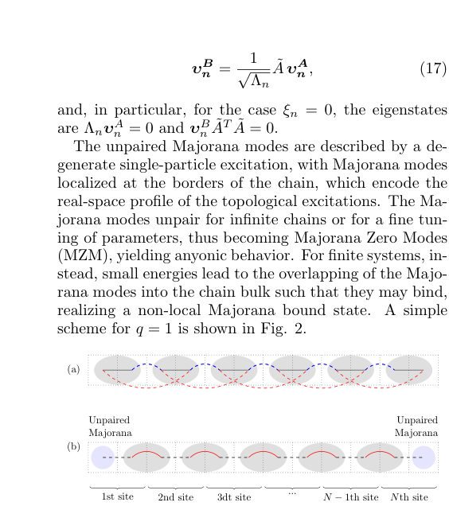
<figcaption class="paper-figure-caption"><b>Fig 2.</b> FIG. 2. (a) Schematic representation of the Kitaev chain exhibiting the lattice sites (filled gray ellipses) in the trivial phase. Chemical potential, hopping and pairing couplings are depicted as lines in the Majorana basis framework. Red and blue dotted lines ˜Aj,j+1 represent Majorana nearest-neighbor hoppings. (b) A representation of the topological phase (in the region |µ/t| &lt; 2). The light blue circles at the edges show the unpaired Majorana states in the topological phase.</figcaption>
</figure>
<figure class="paper-figure-card">
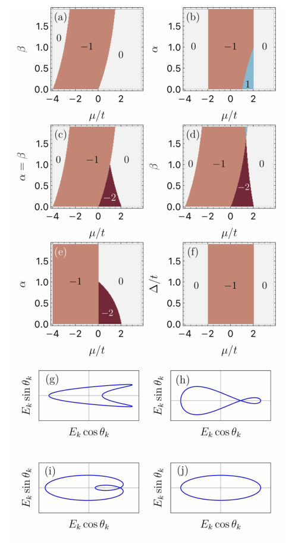
<figcaption class="paper-figure-caption"><b>Fig 3.</b> FIG. 3. Topological phase diagrams of the extended Kitaev chain with next-nearest neighbors (q = 2) for the cases: (a) α →∞, for running β; (b) β →∞, for running α; (c) The homogeneous chain α = β; (d) α = 0 and running β; (e) β = 0 and running α; Cases (c-e) exhibit similar diagrams with a topological invariant of value −2; Case (f) shows the phase diagram of the Kitaev chain (α, β →∞); Panels (g-j) show various examples of the trajectories of nk over the BZ.</figcaption>
</figure>
<figure class="paper-figure-card">
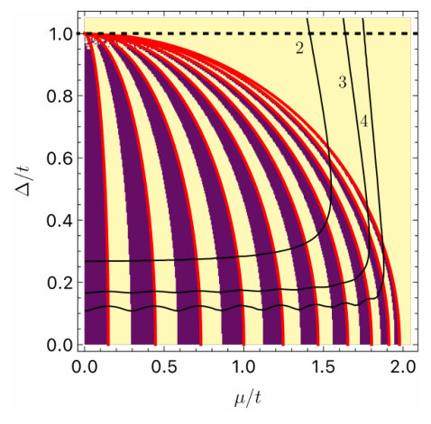
<figcaption class="paper-figure-caption"><b>Fig 4.</b> FIG. 4. Colored phase diagram showing the effective parity regions where Peff = +1 (yellow regions) and Peff = −1 (violet regions) in terms of the parameters (µ, ∆) for a finite chain with N = 20 sites. Red solid lines indicate ground-state fermion parity P switches, while black isolines indicate its Ma- jorana average position (Map) from the border (¯n = 2, 3, 4). These isolines vary showing maxima and minima when the effective parity changes in the circle of oscillations, they tend to oscillate further as ∆/t get smaller. See main text.</figcaption>
</figure>
<figure class="paper-figure-card">
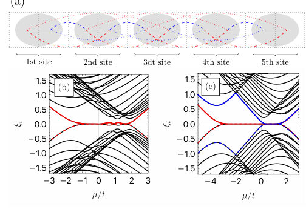
<figcaption class="paper-figure-caption"><b>Fig 5.</b> FIG. 5. (a) Schematic example of a finite chain with N = 5 sites in the trivial phase of the next-nearest neighbor model (q = 2). The nearest-neighbor couplings are represented by the red and blue dashed lines, while the next-nearest ones, by the red and blue dotted lines. The blue solid lines represent the intrasite chemical potential coupling. The eigenenergies of the next-nearest Kitaev chain with N = 20 sites as a function of µ/t are seen in the limit (b) with α = 0 and β →∞, and (c) in the homogeneous case α = β = 0, where red and blue curves represent the two lowest-energy modes.</figcaption>
</figure>
</div>

<p><strong>Summary.</strong> This work analyzes the topology and edge states of extended-range Kitaev chains by calculating the winding number and tracking parity changes. It introduces the Majorana average position ($  ext{Map}$) as a key diagnostic tool, showing that spatial localization patterns correlate with distinct types of topological phase transitions beyond simple energy gap closures.</p>
<p><strong>Why it may be interesting.</strong> The detailed study of edge mode localization via $   ext{Map}$ provides a novel diagnostic tool that complements standard energy gap measurements for characterizing topological phases in superconducting systems, which is highly relevant to quantum materials research.</p>
<details>
<summary>Detailed structure</summary>
<p><strong>Main problem.</strong> The study investigates the topological properties of extended-range Kitaev chain models, particularly focusing on how these properties are characterized when the topological winding number is preserved.</p>
<p><strong>Main result.</strong> The analysis reveals that in truncated-range scenarios, the number of distinct topological phases scales with the number of coupled neighbors. Furthermore, it establishes a deep connection between effective parity changes and the spatial localization/delocalization of Majorana edge modes.</p>
<p><strong>Method.</strong> The authors employ analytical derivations to calculate the topological invariant (winding number) and utilize numerical diagonalization on finite-size clusters in the Majorana basis formalism.</p>
<p><strong>Model / system.</strong> The system is a spinless fermion model described by an extended-range Hamiltonian, generalized from the Kitaev chain with couplings decaying algebraically ($\Delta_\ell \sim 1/\ell^\alpha$, $t_\ell \sim 1/\ell^eta$).</p>
<p><strong>Key observables.</strong> Topological winding number ($
u$), effective parity ($P_{    ext{eff}}$), ground-state fermion parity ($P$), and the Majorana average position ($  ext{Map}$).</p>
<p><strong>Important parameters / regimes.</strong> The decay exponents $\alpha$ and $eta$, the chemical potential $\mu$, and the ratio of coupling strengths $\Delta/t$.</p>
<p><strong>Assumptions / limitations.</strong> The analysis distinguishes between 'energetic switches' (linked to ground-state fermion parity) and a distinct 'functional switch' governing effective parity changes.</p>
<p><strong>Figures summary.</strong> Figures illustrate phase diagrams showing regions of $P_{	ext{eff}}$ change, plots comparing localization measures like IPR vs. $ ext{MP}$, and the dependence of $   ext{Map}$ on system parameters.</p>
<p><strong>Paper structure.</strong> The paper systematically develops the Hamiltonian in the Majorana basis, calculates topological invariants using winding numbers, and then analyzes finite-size effects by tracking changes in effective parity and spatial localization ($    ext{Map}$) across different parameter regimes.</p>
</details>
<details>
<summary>Abstract</summary>
<p>The topological properties of the Kitaev chain model with extended-range interactions are investigated, focusing on cases where the topological winding number is preserved. We assume that the pairing and hopping terms decay algebraically in space with exponents $α$ and $β$, respectively. We show that in the truncated-range scenario, there are as many distinct topological phases as the number of coupled neighboring sites. In addition, an explicit analytical formulation is provided to evaluate the topological invariant and the phase transitions that emerge in these systems. Besides the analytical description, we introduce a new physical insight into the topological excitations of the ground-state by measuring the spatial distribution of the edge modes with the Majorana average position. Taking the next-nearest neighbor Kitaev chains as a probe, various numerical calculations of Majorana edge states were performed in finite-size clusters to determine the sensitivity of the topological zero energy modes to the parameters of interest. The occupation of edge-to-edge non-local fermion states is computed and defined as an effective parity. Such an effective parity exhibits new interesting features beyond the energetic exchange from the ground-state fermion parity switches, which are related to the distribution of the respective edge modes. Our calculations show a direct correlation between the ground-state fermion parity and the edge occupation numbers, which are translated into localization and delocalization of the Majorana average position.</p>
</details>
<p><sub><a href="#top">↑ back to top</a></sub></p>

<p><a id="paper-2606.10985"></a></p>
<h3 id="revisiting-cherenkov-radiation-in-anisotropic-chiral-matter-exact-calculation-reveals-threshold-free-emission"><a href="http://arxiv.org/abs/2606.10985v1">Revisiting Cherenkov radiation in anisotropic chiral matter: exact calculation reveals threshold-free emission</a></h3>
<p><strong>Authors:</strong> R. Martínez von Dossow, Luis F. Urrutia<br>
<strong>Type:</strong> theory · <strong>Category:</strong> other · <strong>PDF:</strong> <a href="https://arxiv.org/pdf/2606.10985v1">https://arxiv.org/pdf/2606.10985v1</a><br>
<strong>Analysis basis:</strong> full PDF text, analyzed in chunks
<strong>Topic relevance:</strong> <code>Keldysh / 2PI / non-Gaussian methods</code> <strong>2/5</strong> · <code>methods for driven-dissipative</code> <strong>2/5</strong> · <code>analog quantum simulation</code> <strong>1/5</strong> · <code>correlated / nonlocal dissipation</code> <strong>1/5</strong> · <code>driven-dissipative phase transition</code> <strong>1/5</strong> · <code>interference shaping light</code> <strong>1/5</strong> · <code>non-equilibrium dynamics</code> <strong>1/5</strong></p>
<div class="figure-strip-hint">↔ Scroll figures horizontally</div>
<div class="paper-figures-scroll">
<figure class="paper-figure-card">
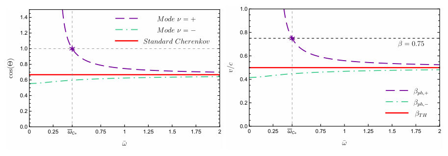
<figcaption class="paper-figure-caption"><b>Fig 1.</b> Figure 1. Left panel: Plot of cos Θ for the ν = ± modes as a function of the dimensionless frequency ¯ω. Right panel: Plot of the phase velocity for each mode as a function of ¯ω. The parameters are n = 2, b = 2.6 × 108 m−1, and β = 0.75.</figcaption>
</figure>
<figure class="paper-figure-card">

<figcaption class="paper-figure-caption"><b>Fig 2.</b> Figure 2 shows the SED in the high-velocity sector. As expected from the analysis of the Cherenkov angle and the phase velocity, the ν = −mode contributes over the entire frequency range, indicating that this mode always emits radiation. In contrast, the ν = + mode contributes only for ¯ω &gt; ¯ωC+, because for ¯ω &lt; ¯ωC+ the Cherenkov angle is not real and the phase velocity is larger than the charge velocity. The standard Cherenkov result is shown for comparison. For ¯ω &gt; ¯ωC+, the sum of the contributions of each mode satisfies E+ + E−= ECh, as indicated in Fig. 2.</figcaption>
</figure>
<figure class="paper-figure-card">
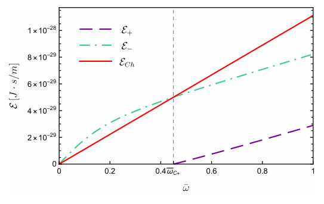
<figcaption class="paper-figure-caption"><b>Fig 3.</b> Figure 2. Spectral energy density in the high-velocity sector as a function of the dimensionless frequency ¯ω. The contributions from the ν = + and ν = −modes are shown, together with the standard Cherenkov result. The parameters are n = 2, b = 2.6 × 108 m−1, and β = 0.75.</figcaption>
</figure>
<figure class="paper-figure-card">
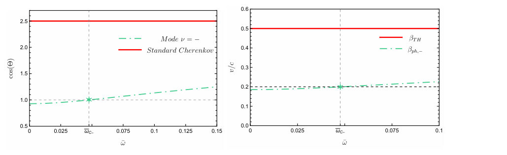
<figcaption class="paper-figure-caption"><b>Fig 4.</b> Figure 3. Left panel: Plot of cos Θ for the ν = −mode as a function of the dimensionless frequency ¯ω. Right panel: Plot of the phase velocity for the ν = −mode as a function of ¯ω. The parameters are n = 2, b = 2.6 × 108 m−1, and β = 0.2. In both cases the ν = + mode lies outside the plotted range. The solid red line would represent the standard Cherenkov case, which is certainly not allowed. Threshold-free CHR can be appreciated in both panels.</figcaption>
</figure>
<figure class="paper-figure-card">
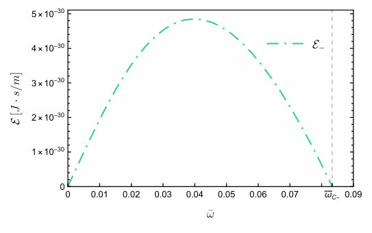
<figcaption class="paper-figure-caption"><b>Fig 5.</b> Figure 4. Spectral energy density in the low-velocity sector as a function of the dimensionless frequency ¯ω. Only the contribution from the ν = −mode is present, and radiation occurs in the interval 0 &lt; ¯ω &lt; ¯ωC−. The parameters are n = 2, b = 2.6×108 m−1, and β = 0.2. This SED corresponds entirely to threshold-free CHR.</figcaption>
</figure>
</div>

<p><strong>Summary.</strong> This work provides an exact analytical calculation of Cherenkov radiation in anisotropic chiral matter using modified electrodynamics. The key finding is the demonstration of threshold-free CHR for slow charges, which occurs within a specific low-frequency band. This result surpasses previous approximate calculations by rigorously solving the field equations.</p>
<p><strong>Why it may be interesting.</strong> While focused on classical electrodynamics in exotic media, the rigorous mathematical techniques used (solving coupled differential equations in space-frequency domain, analyzing boundary conditions) are highly relevant to theoretical physics dealing with effective Hamiltonians or modified dispersion relations in condensed matter systems.</p>
<details>
<summary>Detailed structure</summary>
<p><strong>Main problem.</strong> The study revisits Cherenkov radiation (CHR) in anisotropic chiral matter, aiming to provide an exact calculation that reveals a novel phenomenon: threshold-free emission.</p>
<p><strong>Main result.</strong> The model predicts that for slowly moving charges ($eta < 1/n$), CHR can occur without the standard velocity threshold, confined instead to a finite low-frequency window ($0 < \omega < \omega_{C-}$).</p>
<p><strong>Method.</strong> The authors solve modified Maxwell's equations exactly in the space-frequency domain using cylindrical coordinates and separation of variables, deriving dispersion relations from outgoing wave boundary conditions.</p>
<p><strong>Model / system.</strong> The system is anisotropic chiral matter described by Carroll-Field-Jackiw electrodynamics, characterized by a position-dependent axion angle $  heta(x)$ and governed by modified Maxwell's equations.</p>
<p><strong>Key observables.</strong> Spectral Energy Distribution (SED) of the radiation ($E_
u$), Cherenkov cones ($\Theta_
u$), and phase velocity ($v_{    ext{ph},
u}(\omega)$).</p>
<p><strong>Important parameters / regimes.</strong> Charge velocity $eta$, refractive index $n$, chiral parameter $b$, and frequency ranges defining emission windows.</p>
<p><strong>Assumptions / limitations.</strong> The analysis relies on exact solutions in the space-frequency domain, explicitly contrasting with previous approximate methods (e.g., Green's function calculations) which fail at low frequencies.</p>
<p><strong>Figures summary.</strong> Figures illustrate SEDs for both high and low velocity regimes, confirming that only one polarization mode ($
u=-$) contributes within a finite frequency window in the low-velocity sector.</p>
<p><strong>Paper structure.</strong> The paper proceeds by deriving field solutions using boundary conditions (Gauss's/Ampere's laws) to find coefficients ($Y^\pm$), establishing dispersion relations, and finally calculating the SED via the Poynting vector, comparing exact results against approximations.</p>
</details>
<details>
<summary>Abstract</summary>
<p>We explore Cherenkov radiation in anisotropic chiral matter within the framework of Carroll-Field-Jackiw electrodynamics, where the axion angle exhibits a linear dependence on position. By deriving closed-form expressions for the polarization modes of electromagnetic fields in cylindrical coordinates and the space-frequency domain, we solve the modified Maxwell's equations. To enforce causality, we impose outgoing wave boundary conditions at a cylindrical surface at infinity, which yields the dispersion relations. Our analysis uncovers the specific angles and frequency ranges that allow for zero, one, or two Cherenkov cones. We also obtain the spectral energy distribution of the radiation in all cases. Notably, one sector of the model exhibits a novel phenomenon: Cherenkov radiation can be generated by slowly moving charges without a threshold, but only within a specific frequency range. This behavior is not observed in standard materials. Using our exact calculations, we also investigate the reliability of an approximate method previously proposed based on the calculation of the Green's function for the system.</p>
</details>
<p><sub><a href="#top">↑ back to top</a></sub></p>

<p><a id="paper-2606.11114"></a></p>
<h3 id="flower-like-wo3-modified-vulcan-carbon-gdes-for-photoelectro-fenton-process-efficient-ciprofloxacin-degradation-and-mechanistic-insights"><a href="http://arxiv.org/abs/2606.11114v1">Flower-like WO3-modified Vulcan carbon GDEs for photoelectro-Fenton process: Efficient ciprofloxacin degradation and mechanistic insights</a></h3>
<p><strong>Authors:</strong> João Paulo C. Moura, Vanessa S. Antonin, Caio Machado Fernandes, Aline B. Trench, Erica S. Conrado, Michell O. Almeida, Kathia M. Honorio, Renata Colombo, Rafael Sotana, Ana M. P. Neto, Mauro C. Santos<br>
<strong>Type:</strong> both · <strong>Category:</strong> other · <strong>PDF:</strong> <a href="https://arxiv.org/pdf/2606.11114v1">https://arxiv.org/pdf/2606.11114v1</a><br>
<strong>Analysis basis:</strong> full PDF text, analyzed in chunks
<strong>Topic relevance:</strong> <code>non-equilibrium dynamics</code> <strong>2/5</strong> · <code>Keldysh / 2PI / non-Gaussian methods</code> <strong>1/5</strong> · <code>analog quantum simulation</code> <strong>1/5</strong> · <code>correlated / nonlocal dissipation</code> <strong>1/5</strong> · <code>driven-dissipative phase transition</code> <strong>1/5</strong> · <code>methods for driven-dissipative</code> <strong>1/5</strong> · <code>non-equilibrium universality</code> <strong>1/5</strong></p>
<div class="figure-strip-hint">↔ Scroll figures horizontally</div>
<div class="paper-figures-scroll">
<figure class="paper-figure-card">
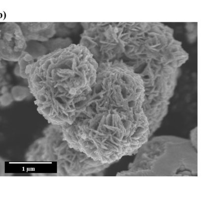
<figcaption class="paper-figure-caption"><b>Fig 1.</b> Figure 1. (a) XRD pattern and (b) SEM image of the synthesized WO3 nanostructures.</figcaption>
</figure>
<figure class="paper-figure-card">
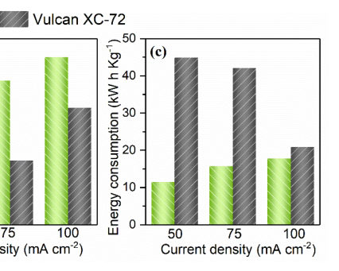
<figcaption class="paper-figure-caption"><b>Fig 2.</b> Figure 2. (a) H2O2 yield, (b) current efficiency, and (c) energy consumption achieved</figcaption>
</figure>
<figure class="paper-figure-card">
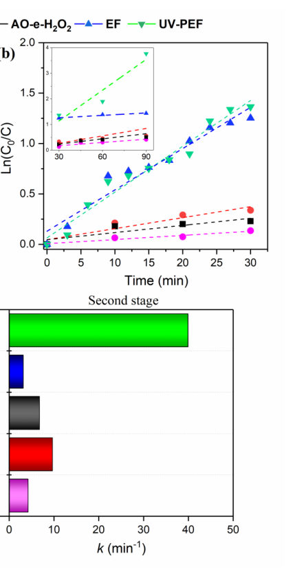
<figcaption class="paper-figure-caption"><b>Fig 3.</b> Figure 3. (a) CIP degradation, (b) kinetic analysis assuming a pseudo-first-order reaction</figcaption>
</figure>
<figure class="paper-figure-card">
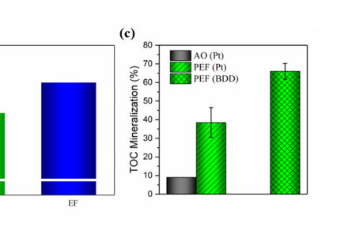
<figcaption class="paper-figure-caption"><b>Fig 4.</b> Figure 4. (a) Dissolved Fe species evolution, and (b) residual H2O2 over PEF and EF</figcaption>
</figure>
<figure class="paper-figure-card">
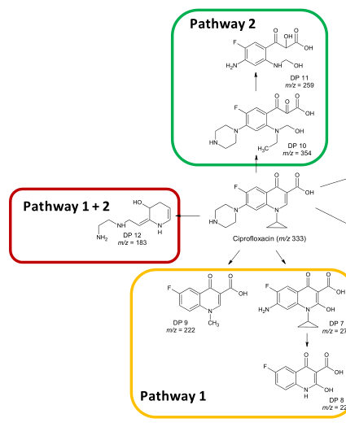
<figcaption class="paper-figure-caption"><b>Fig 5.</b> Figure 5. Main reaction pathway proposed for the degradation of ciprofloxacin by</figcaption>
</figure>
</div>

<p><strong>Summary.</strong> This research demonstrates that modifying Gas Diffusion Electrodes with WO3 significantly boosts hydrogen peroxide production for treating contaminated water. By employing a Photoelectro-Fenton process, the study achieves near-complete removal of the antibiotic ciprofloxacin while confirming that the resulting byproducts exhibit lower predicted environmental toxicity.</p>
<p><strong>Why it may be interesting.</strong> While not directly quantum physics, the study involves complex reaction kinetics and radical chemistry, which can sometimes be modeled using open quantum system approaches or master equations to describe pollutant decay rates.</p>
<details>
<summary>Detailed structure</summary>
<p><strong>Main problem.</strong> The primary goal is the efficient degradation of ciprofloxacin (CIP), a fluoroquinolone antibiotic, from wastewater using advanced oxidation processes to combat antimicrobial resistance.</p>
<p><strong>Main result.</strong> WO3-modified Vulcan carbon Gas Diffusion Electrodes (GDEs) significantly enhance hydrogen peroxide generation and facilitate complete CIP removal via Photoelectro-Fenton (PEF) processes. Furthermore, the degradation products show reduced environmental toxicity compared to the parent compound.</p>
<p><strong>Method.</strong> The study combines electrochemical measurements (H2O2 electrogeneration), advanced oxidation techniques (Photoelectro-Fenton), computational chemistry (DFT for Fukui indices), and ecotoxicological assessment (ECOSAR model).</p>
<p><strong>Model / system.</strong> The physical system is an electrochemical reactor utilizing WO3/C GDEs under UV irradiation. The chemical process involves the generation of highly reactive hydroxyl radicals ($\cdot	ext{OH}$) to attack specific sites on the CIP molecule.</p>
<p><strong>Key observables.</strong> H2O2 concentration (up to 916 mg L-1), CIP degradation percentage (complete removal in PEF), Total Organic Carbon (TOC) mineralization rate (up to 66%), and predicted environmental toxicity levels (ECOSAR classification).</p>
<p><strong>Important parameters / regimes.</strong> Applied current densities (50-100 mA cm-2), reaction time (90 min for complete removal), catalyst modification percentage (3% WO3), and electrochemical potential.</p>
<p><strong>Assumptions / limitations.</strong> The degradation mechanism is assumed to proceed primarily via $\cdot	ext{OH}$ radical attack on the piperazine and quinolone rings. Toxicity assessment relies on predictive ECOSAR models.</p>
<p><strong>Figures summary.</strong> Figures likely illustrate the proposed reaction pathways, showing sequential product formation (DP1-DP12) based on radical attacks predicted by Fukui indices, alongside graphs detailing degradation kinetics and toxicity profiles.</p>
<p><strong>Paper structure.</strong> The paper follows a structure moving from electrocatalytic enhancement ($  ext{H}_2    ext{O}_2$ generation) to the main remediation process (PEF), followed by detailed mechanistic elucidation using computational chemistry (Fukui indices) and culminating in an environmental risk assessment (ECOSAR toxicity testing).</p>
</details>
<details>
<summary>Abstract</summary>
<p>Electrochemical H2O2 synthesis was investigated using a 3 percent WO3 C gas diffusion electrode GDE. The catalyst outperformed bare Vulcan carbon, generating H2O2 concentrations of 423, 586, and 916 mg L at 50, 75, and 100 mA cm2, respectively, maintaining around 70 percent current efficiency. This performance and lower energy consumption are attributed to the WO3 carbon synergistic effect. In electro Fenton EF applications, the WO3 C GDE achieved rapid initial ciprofloxacin CIP degradation of around 70 percent in 30 min, though limited later by slow Fe2 regeneration. Incorporating UV light photoelectro Fenton overcame this constraint, yielding complete CIP removal within 90 min, while a boron doped diamond BDD anode enhanced total organic carbon TOC mineralization to 66 percent. The proposed degradation mechanism proceeds via hydroxyl radical attack on the piperazine ring with or without defluorination and quinolone ring oxidation, with theoretical analysis confirming reduced environmental toxicity of the transformation products. Overall, WO3 C GDEs represent a highly efficient strategy for H2O2 generation and wastewater remediation.</p>
</details>
<p><sub><a href="#top">↑ back to top</a></sub></p>

<p><a id="paper-2606.10996"></a></p>
<h3 id="optical-fingerprints-across-the-strain-driven-semi-dirac-transition-in-kekule-o-graphene"><a href="http://arxiv.org/abs/2606.10996v1">Optical fingerprints across the strain-driven semi-Dirac transition in Kekulé-O graphene</a></h3>
<p><strong>Authors:</strong> Yawar Mohammadi<br>
<strong>Type:</strong> theory · <strong>Category:</strong> other · <strong>PDF:</strong> <a href="https://arxiv.org/pdf/2606.10996v1">https://arxiv.org/pdf/2606.10996v1</a><br>
<strong>Analysis basis:</strong> full PDF text, analyzed in chunks
<strong>Topic relevance:</strong> <code>Keldysh / 2PI / non-Gaussian methods</code> <strong>1/5</strong> · <code>driven-dissipative phase transition</code> <strong>1/5</strong></p>
<div class="figure-strip-hint">↔ Scroll figures horizontally</div>
<div class="paper-figures-scroll">
<figure class="paper-figure-card">
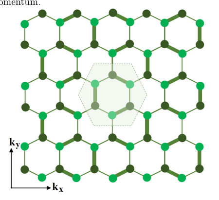
<figcaption class="paper-figure-caption"><b>Fig 1.</b> FIG. 1. Schematic of graphene with a uniform Kekul´e-O bond modulation. The thick and thin bonds represent alternat- ing strong and weak hopping amplitudes characteristic of the Kekul´e-O pattern. The shaded hexagon denotes the enlarged unit cell of the distorted lattice.</figcaption>
</figure>
<figure class="paper-figure-card">
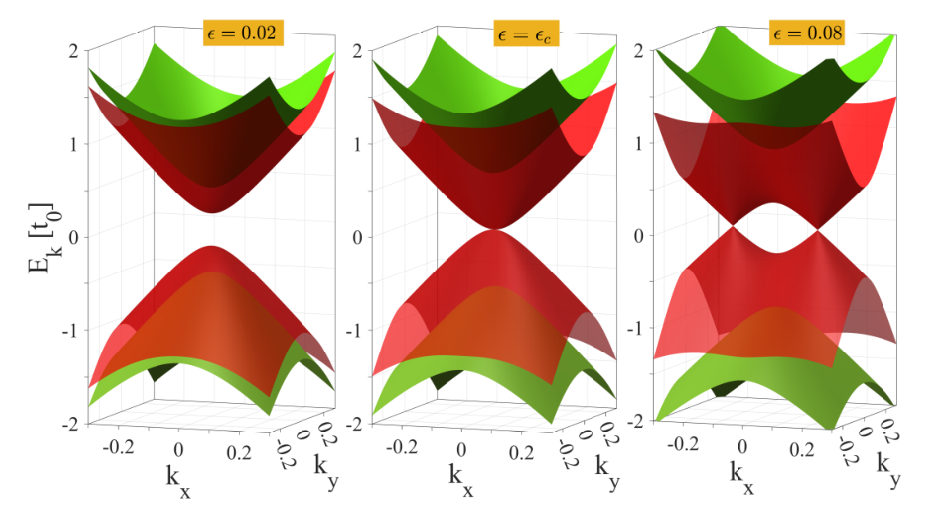
<figcaption class="paper-figure-caption"><b>Fig 2.</b> FIG. 2. Evolution of the band structure of Kekul´e-O graphene with fixed Kekul´e modulation strength ∆= 0.04 under uniaxial strain applied along the x direction for ε = 0.02, ε = εc, and ε = 0.08. Strain lifts the degeneracy of the unstrained bands, driving one pair toward zero energy and the other to higher energies. At ε = εc, the gap closes and a semi-Dirac spectrum emerges. For ε &gt; εc, the semi-Dirac node splits into two anisotropic Dirac cones, accompanied by the formation of saddle points near the Γ point, while the higher-energy bands move further away from the low-energy sector.</figcaption>
</figure>
<figure class="paper-figure-card">
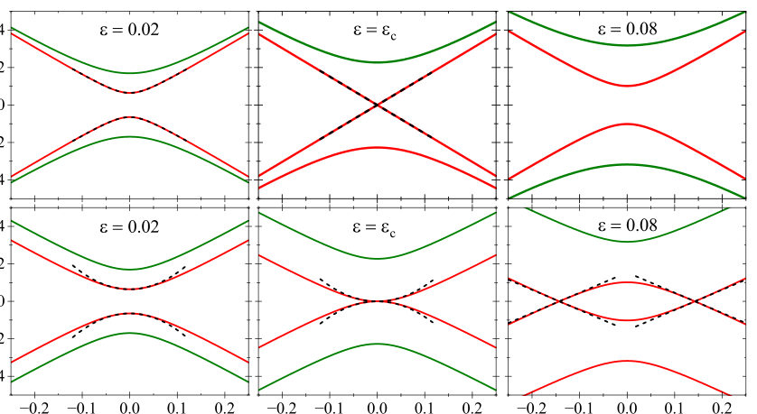
<figcaption class="paper-figure-caption"><b>Fig 3.</b> FIG. 3. Band-structure cuts along ky = 0 (top panels) and kx = 0 (bottom panels) for strain values ε = 0.02, εc, and 0.08, corresponding to uniaxial deformation along the zigzag direction. The horizontal axis denotes ky = 0 (top panels) and kx = 0 (bottom panels), respectively. Solid lines represent the full continuum model, while dashed lines show the results obtained from the effective low-energy Hamiltonian (Appendix A). Good agreement between the two descriptions is observed in the low-energy regime, particularly near the Γ point and around the new Dirac points in the post-critical regime.</figcaption>
</figure>
<figure class="paper-figure-card">
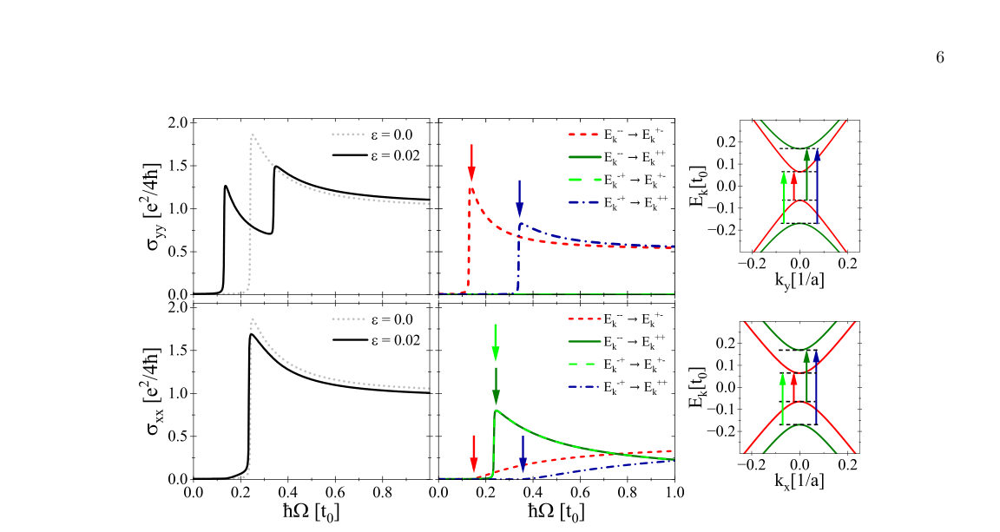
<figcaption class="paper-figure-caption"><b>Fig 4.</b> FIG. 4. Longitudinal optical conductivity of strained Kekul´e-O graphene in the gapped regime under uniaxial strain ε = 0.02 applied along the zigzag (x) direction. The left panels show σxx (top) and σyy (bottom), with dashed gray curves indicating the unstrained case. The middle panels resolve the response into contributions from intra-s and inter-s interband transitions, while the right panels display the corresponding band structures along kx and ky with arrows indicating the dominant optical transitions.</figcaption>
</figure>
<figure class="paper-figure-card">
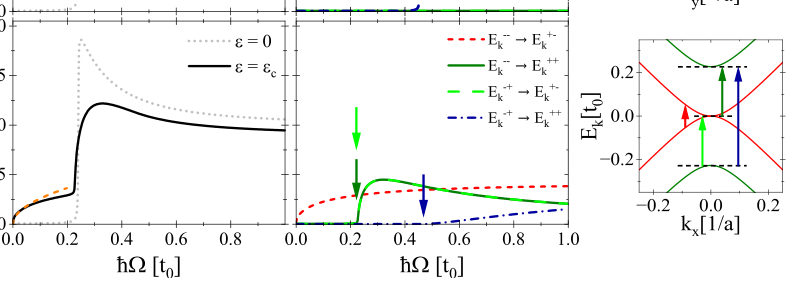
<figcaption class="paper-figure-caption"><b>Fig 5.</b> FIG. 5. Optical conductivity of strained Kekul´e-O graphene at the critical strain ε = εc, where the system undergoes a transition to a semi-Dirac state with mixed linear and quadratic dispersion. The left panels show σxx (top) and σyy (bottom); dashed gray curves denote the unstrained case, while red dashed-dotted curves represent the analytical low-energy theory derived in Appendix B. The middle panels decompose the response into intra-s and inter-s interband transitions, and the right panels show the corresponding band dispersions along kx and ky with transition-resolved arrows. The results reveal a collapse of the finite-frequency absorption gap and a redistribution of spectral weight...</figcaption>
</figure>
</div>

<p><strong>Summary.</strong> This theoretical work investigates how strain drives a semi-Dirac transition in Kekulé-O graphene by analyzing its optical fingerprints. The authors calculate the anisotropic optical conductivity, revealing distinct signatures—such as specific power-law scaling and van Hove resonances—that appear sequentially as the electronic band structure reconstructs across different strain regimes. These fingerprints are shown to be robust against realistic experimental imperfections like disorder and finite temperature.</p>
<p><strong>Why it may be interesting.</strong> The robust identification of distinct, measurable optical signatures that track fundamental topological/electronic phase transitions (like semi-Dirac points) is highly relevant for designing spectroscopic probes in condensed matter systems.</p>
<details>
<summary>Detailed structure</summary>
<p><strong>Main problem.</strong> The study aims to characterize how optical fingerprints evolve across a strain-induced semi-Dirac transition in Kekulé-O graphene.</p>
<p><strong>Main result.</strong> The paper identifies three distinct, observable low-energy optical fingerprints—gapped peaks, specific power-law scaling ($\Omega^{1/2}$ and $\Omega^{-1/2}$), and van Hove resonances—that track the continuous band reconstruction across the transition point.</p>
<p><strong>Method.</strong> The analysis combines numerical four-band calculations with analytical low-energy effective Hamiltonians to compute the longitudinal optical conductivity using the Kubo formula.</p>
<p><strong>Model / system.</strong> The physical system is Kekulé-O graphene subjected to uniaxial strain ($\epsilon$). The theoretical framework utilizes continuum effective Hamiltonians derived from a full 4x4 model, allowing for analysis across gapped, semi-Dirac critical, and post-critical regimes.</p>
<p><strong>Key observables.</strong> Anisotropic optical conductivity ($\sigma_{xx}(\Omega)$ and $\sigma_{yy}(\Omega)$), spectral weight redistribution, gap closing signatures, and van Hove resonances.</p>
<p><strong>Important parameters / regimes.</strong> Uniaxial strain ($\epsilon$), frequency ($\Omega$), critical strain ($\epsilon_c$), temperature ($T$), and disorder broadening ($\eta$).</p>
<p><strong>Assumptions / limitations.</strong> The analysis relies on low-energy effective Hamiltonians which are assumed to accurately describe the physics near the $\Gamma$ point, even when incorporating moderate disorder or finite temperatures.</p>
<p><strong>Figures summary.</strong> Figures illustrate band structure evolution across strain regimes (gap closing, semi-Dirac node emergence, anisotropic Dirac cones) and show calculated optical conductivities ($\sigma_{xx}, \sigma_{yy}$) demonstrating the characteristic scaling laws in each regime.</p>
<p><strong>Paper structure.</strong> The paper systematically analyzes the optical response by mapping out the electronic band structure evolution as strain increases: starting from a gapped state $  o$ passing through the semi-Dirac critical point (characterized by specific power-law scaling) $    o$ entering the post-critical regime (showing split Dirac cones and van Hove resonances).</p>
</details>
<details>
<summary>Abstract</summary>
<p>We show that the strain-driven semi-Dirac transition in Kekulé-O graphene gives rise to a sequence of anisotropic optical fingerprints associated with band structure reconstruction. Across the transition, optical spectral weight is continuously redistributed among the dominant interband transitions, leading to a pronounced enhancement of the optical anisotropy. Combining numerical four-band calculations with analytical low-energy results, we identify three low-energy fingerprints that emerge with increasing strain: gapped absorption peaks, semi-Dirac critical scaling, and a pronounced van Hove optical resonance. At the semi-Dirac critical point, where the Kekulé gap closes at the $Γ$ point, the low-energy optical conductivity is characterized by $σ_{xx}(Ω)\proptoΩ^{1/2}$ and $σ_{yy}(Ω)\proptoΩ^{-1/2}$. Beyond the transition, the semi-Dirac point splits into two anisotropic Dirac cones, accompanied by the emergence of saddle points near the $Γ$ point. The resulting saddle-point excitations produce a pronounced van Hove optical resonance at energies well below those of graphene, while the split Dirac cones give rise to an anisotropic constant optical conductivity. We further show that the low-energy optical fingerprints can be traced to the continuous evolution of a dominant optical transition channel driven by strain-induced band reconstruction. Moreover, the fingerprints remain identifiable in the presence of moderate disorder broadening and finite-temperature effects, indicating their potential observability under experimentally realistic conditions.</p>
</details>
<p><sub><a href="#top">↑ back to top</a></sub></p>

<p><a id="paper-2606.10788"></a></p>
<h3 id="interplay-between-aharonov-bohm-and-altshuler-aronov-spivak-oscillations-in-phase-pure-gaasinas-coreshell-nanowires-of-different-lengths"><a href="http://arxiv.org/abs/2606.10788v1">Interplay between Aharonov-Bohm and Altshuler-Aronov-Spivak oscillations in phase-pure GaAs/InAs core/shell nanowires of different lengths</a></h3>
<p><strong>Authors:</strong> Farah Basarić, Kaiwen Wang, Tudor-Gabriel Dumitru, Andrei Manolescu, Francisco Alvarado Cesar, Ana M. Sanchez, Christoph Krause, Detlev Grützmacher, Alexander Pawlis, Thomas Schäpers<br>
<strong>Type:</strong> both · <strong>Category:</strong> other · <strong>PDF:</strong> <a href="https://arxiv.org/pdf/2606.10788v1">https://arxiv.org/pdf/2606.10788v1</a><br>
<strong>Analysis basis:</strong> full PDF text, analyzed in chunks
<strong>Topic relevance:</strong> <code>interference shaping light</code> <strong>1/5</strong></p>
<div class="figure-strip-hint">↔ Scroll figures horizontally</div>
<div class="paper-figures-scroll">
<figure class="paper-figure-card">
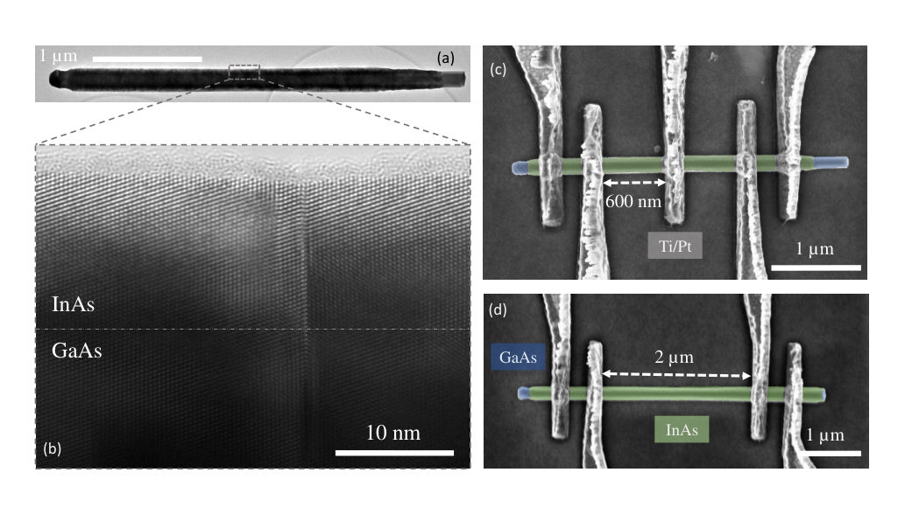
<figcaption class="paper-figure-caption"><b>Fig 1.</b> FIG. 1: (a) Low-magnification TEM image of a representative example of the GaAs/InAs nanowire, featuring (b) high- resolution TEM image of the nanowire middle region. (c),(d) False color SEM image of sample C and E, respectively, emphasizing differences in inner contact separation lengths Lc, 600 nm and 2 µm, respectively.</figcaption>
</figure>
<figure class="paper-figure-card">
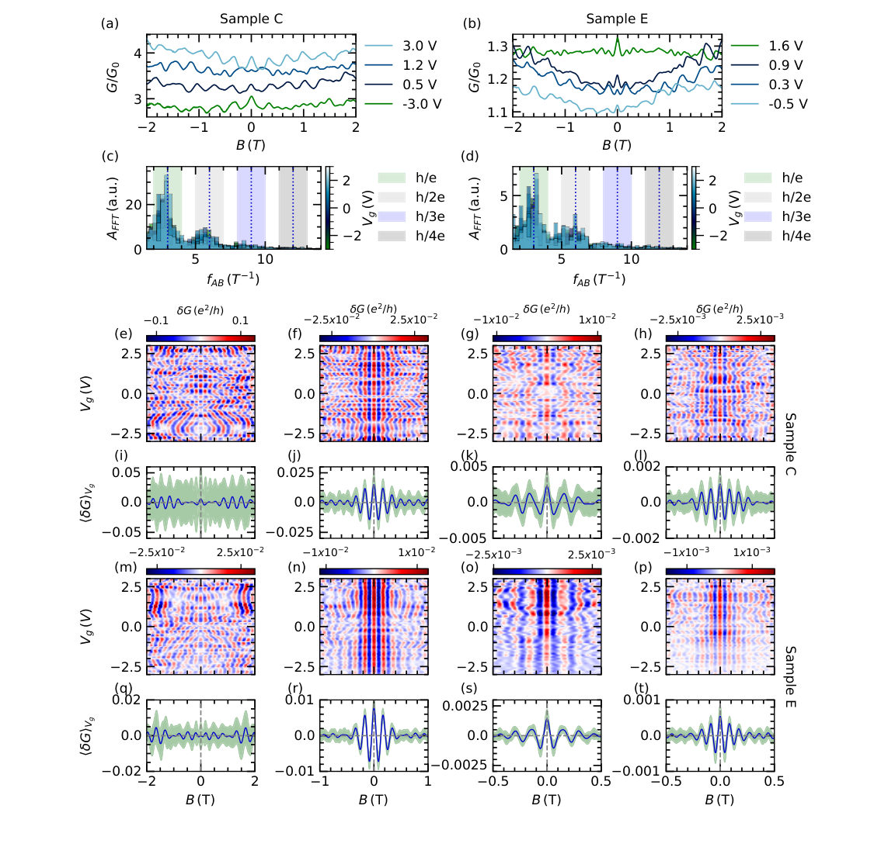
<figcaption class="paper-figure-caption"><b>Fig 2.</b> FIG. 2: Normalized magnetoconductance G/G0, with G0 = e2/h, for various gate voltage Vg values, for (a) sample C, and (b) E, respectively. Corresponding fast-Fourier transform of the data shown in (a) and (b), for samples (c) C, and (d) E. Ranges of present harmonics (h/e, h/2e, h/3e, h/4e) are presented in color-coded scheme, with mean frequency value marked by dotted line. Colormaps for oscillation amplitude δG as a function of gate voltage and magnetic field for sample C, presented for (e) h/e-, (f) h/2e-, (g) h/3e-, and (h) h/4e-periodic oscillations defined by the frequency windows marked in (b). Averaged oscillation amplitude ⟨δG⟩Vg over the complete gate voltage range, as a function...</figcaption>
</figure>
<figure class="paper-figure-card">
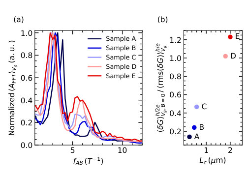
<figcaption class="paper-figure-caption"><b>Fig 3.</b> FIG. 3: (a) Normalized average of fast Fourier Ampli- tude ⟨AFFT⟩Vg as a function of frequency for samples with different contact separations (samples A to E). (b) Ratio of the average amplitude of the AAS oscillations ⟨δG⟩h/2e Vg,B=0 at B = 0 and the root-mean-square ampli- tude of the h/e-periodic AB-type oscillations, averaged over the gate voltage ⟨rms(δG)⟩h/2 Vg for different contact separation lengths.</figcaption>
</figure>
<figure class="paper-figure-card">
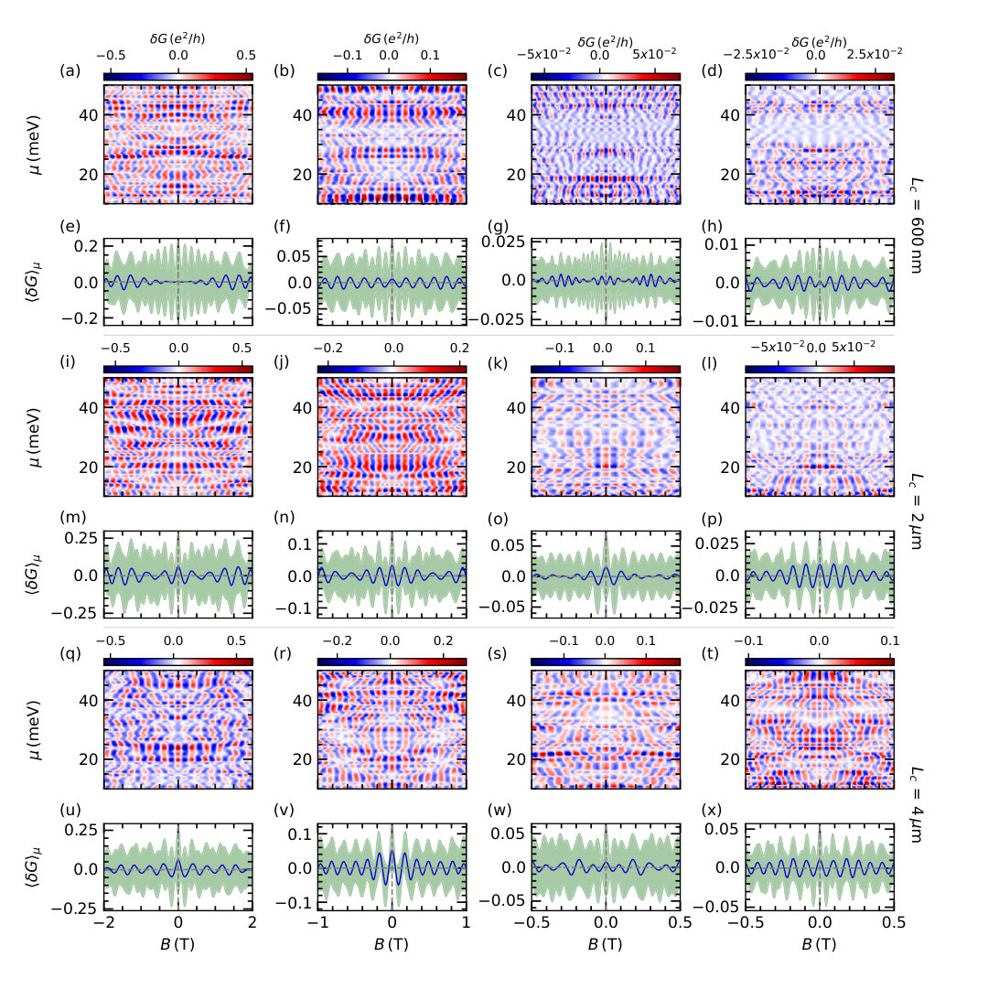
<figcaption class="paper-figure-caption"><b>Fig 4.</b> FIG. 4: Panels (a)-(d), (i)-(l), and (q)-(t) show the conductance oscillation amplitudes of first to fourth harmonics, with periods from h/e to h/4e, as a function of the magnetic field and chemical potential, for nanowires of lengths L = 600 nm, 2 µm, and 4 µm, respectively. Panels (e)-(h), (m)-(p), and (u)-(x) display the average amplitude of the oscillation (solid blue line) and its standard deviation (in green) with respect to the chemical potential µ for each length. Note that the displayed magnetic field range is successively reduced for the higher harmonics.</figcaption>
</figure>
<figure class="paper-figure-card">
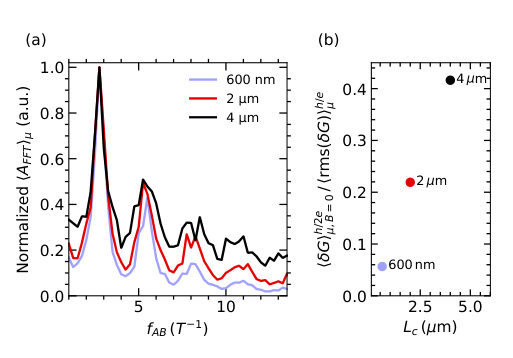
<figcaption class="paper-figure-caption"><b>Fig 5.</b> FIG. 5: (a) Normalized fast Fourier amplitude ⟨AFFT⟩µ averaged over µ as a function of frequency f for the 600 nm (light blue), 2 µm (red), and 4 µm (dark blue) long nanowires. (b) Ratio of the average amplitude of the simulated AAS-type oscillations ⟨δG⟩h/2e µ,B=0 at B = 0 and the root-mean-square amplitude of the simulated h/e- periodic AB-type oscillations averaged over the chemical potential ⟨rms(δG)⟩h/2e µ .</figcaption>
</figure>
</div>

<p><strong>Summary.</strong> The study investigates how Aharonov-Bohm and Altshuler-Aronov-Spivak oscillations manifest in GaAs/InAs nanowires as a function of wire length. By analyzing magnetoconductance, the authors show that longer wires enhance the phase-rigid AAS signal relative to the AB signal. This work confirms quasi-ballistic transport regimes suitable for quantum device applications.</p>
<p><strong>Why it may be interesting.</strong> This work provides a detailed platform for studying fundamental quantum interference effects (AB vs. AAS) in mesoscopic semiconductor nanostructures, which is highly relevant for designing superconducting quantum devices.</p>
<details>
<summary>Detailed structure</summary>
<p><strong>Main problem.</strong> The study investigates the interplay between Aharonov-Bohm (AB) and Altshuler-Aronov-Spivak (AAS) conductance oscillations in GaAs/InAs core/shell nanowires as a function of contact separation length.</p>
<p><strong>Main result.</strong> Increasing the contact separation length enhances phase-rigid AAS oscillations ($h/2e$-periodic) while causing the AB oscillations ($h/e$-periodic) to diminish due to averaging effects. The presence of higher harmonics ($h/3e, h/4e$) is also observed and analyzed.</p>
<p><strong>Method.</strong> The research combines experimental magnetotransport measurements (measuring conductance vs. magnetic field and gate voltage) with theoretical analysis using tight-binding quantum transport simulations (Landauer–Büttiker formalism).</p>
<p><strong>Model / system.</strong> The physical system is phase-pure GaAs/InAs core/shell nanowires, which act as tubular conductors exhibiting interference phenomena from closed loops encircling an insulating core when subjected to an axial magnetic field.</p>
<p><strong>Key observables.</strong> Magnetoconductance oscillations periodic in $h/e$ (AB) and $h/2e$ (AAS), phase rigidity of these oscillations, and the amplitude dependence on sample length ($L_c$).</p>
<p><strong>Important parameters / regimes.</strong> Contact separation length ($L_c$), magnetic field ($B$), gate voltage ($V_g$), and harmonic indices ($n=1, 2, 3, 4$).</p>
<p><strong>Assumptions / limitations.</strong> The analysis assumes that the observed oscillations can be separated into distinct harmonic components related to AB (non-time-reversed paths) and AAS (time-reversed paths) interference.</p>
<p><strong>Figures summary.</strong> Figures show TEM/SEM images of nanowires with varying contact separations, color maps and averaged magnetoconductance plots revealing periodicities ($h/e$ vs $h/2e$), and FFT spectra confirming the presence and relative strength of higher harmonics up to $h/4e$.</p>
<p><strong>Paper structure.</strong> The paper systematically analyzes experimental data across samples with different contact lengths, comparing the decay of AB oscillations against the enhancement of AAS oscillations. Theoretical simulations are used to confirm these length-dependent trends and analyze the contribution of specific harmonic terms.</p>
</details>
<details>
<summary>Abstract</summary>
<p>In GaAs/InAs core/shell nanowires, comprising a tubular conducting shell, interference phenomena observed under an axial field and originating from closed-loop states encircling the insulating core, provide an ideal platform for superconducting quantum devices that utilize effects such as Aharonov--Bohm or Altshuler--Aronov--Spivak-type conductance oscillations. Both effects are different in nature with respect to phase rigidity because of interference of non-time-reversed or time-reversed paths, respectively. Since their occurrence is largely governed by averaging effects, which depend on sample dimensions and the transport regime, we present a systematic study of flux-periodic oscillations of phase-pure zinc-blende GaAs/InAs core/shell nanowires as a function of gate voltage for samples with different contact separation lengths. Our analysis shows that with increasing contact separation length, averaging effects result in gradual reduction of $h/e$-periodic Aharonov--Bohm-type oscillations, while the $h/2e$-periodic Altshuler--Aronov--Spivak oscillations and its $h/4e$-periodic higher harmonics are enhanced. The additional phase rigidity seen in the $h/3e$-periodic oscillations is attributed to phase rigidity propagating from the neighbouring lower harmonics. Our tight-binding transport simulations on nanowires of different lengths which contain only a few scattering centers confirm the experimental observations regarding the different harmonics and their phase rigidity. Together, our experimental and simulation findings indicate quasi-ballistic transport with persistent Aharonov--Bohm-, and phase-rigid Altshuler--Aronov--Spivak-type oscillations despite few scattering centers.</p>
</details>
<p><sub><a href="#top">↑ back to top</a></sub></p>

<p><a id="paper-2606.10162"></a></p>
<h3 id="microscopic-investigation-of-the-superconducting-state-in-cucomath1182mathsmath1183math-evidence-for-an-intermediate-coupling-fully-gapped-superconductor"><a href="http://arxiv.org/abs/2606.10162v1">Microscopic Investigation of the Superconducting State in CuCo$_{2}$S$_{4}$: Evidence for an Intermediate-Coupling Fully Gapped Superconductor</a></h3>
<p><strong>Authors:</strong> K. Panda, A. Bhattacharyya, Liang-Wen Ji, Jing Li, R. Stewart, D. T. Adroja, Guang-Han Cao<br>
<strong>Type:</strong> experiment · <strong>Category:</strong> other · <strong>PDF:</strong> <a href="https://arxiv.org/pdf/2606.10162v1">https://arxiv.org/pdf/2606.10162v1</a><br>
<strong>Analysis basis:</strong> full PDF text, analyzed in chunks
<strong>Topic relevance:</strong> <code>quantum measurements</code> <strong>1/5</strong></p>
<div class="figure-strip-hint">↔ Scroll figures horizontally</div>
<div class="paper-figures-scroll">
<figure class="paper-figure-card">
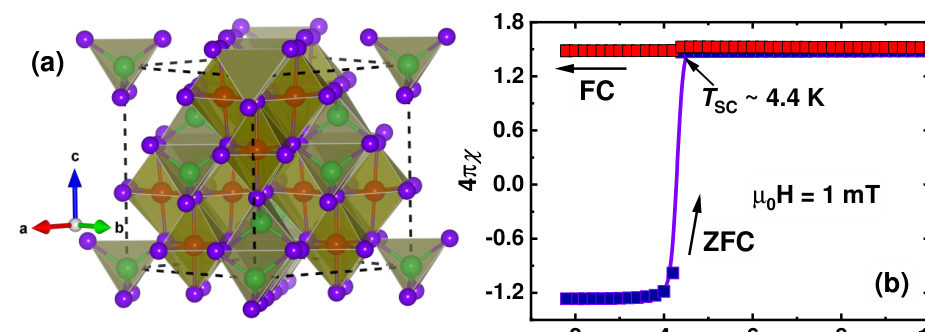
<figcaption class="paper-figure-caption"><b>Fig 1.</b> Figure 1: (a) Crystal structure of CuCo2S4, illustrating the arrangement of tetrahedral (CuS4) and octahedral (CoS6) units. In this depiction, copper (Cu) atoms are represented as green spheres (large), cobalt (Co) atoms as red spheres (medium), and sulfur (S) atoms as violet spheres (small). (b) Temperature-dependent magnetic susceptibility measured under zero-field-cooled (ZFC) and field-cooled (FC) conditions in an applied magnetic field of 1 mT.</figcaption>
</figure>
<figure class="paper-figure-card">
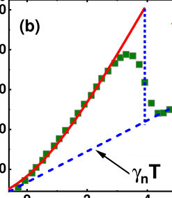
<figcaption class="paper-figure-caption"><b>Fig 2.</b> Figure 2: (a) Temperature dependence of the heat capacity, CP(T), measured from 1.8 K to 6 K in zero applied magnetic field. The solid line represents a fit of CP(T) in the normal state using the Debye model. (b) Electronic contribution to the zero-field heat capacity, Ce, as a function of temperature. The solid line shows a fit to Ce using the isotropic Bardeen-Cooper-Schrieffer (BCS) model, including a term for the nonsuperconducting fraction, γnsT. The blue dashed line represents an extrapolation of the normal-state electronic heat capacity, γnT.</figcaption>
</figure>
<figure class="paper-figure-card">

<figcaption class="paper-figure-caption"><b>Fig 3.</b> Figure 3: Transverse-field µSR asymmetry spectra for CuCo2S4 collected at an applied magnetic field of 30 mT, comparing the field-cooled state at 0.25 K (below the critical temperature, TSC) and 5.2 K (above TSC). The solid lines represent fits using Eq. 1.</figcaption>
</figure>
<figure class="paper-figure-card">

<figcaption class="paper-figure-caption"><b>Fig 4.</b> Figure 4: Superconducting properties of CuCo2S4 under an applied magnetic field of 30 mT. (a) Temperature dependence of the superconducting depolariza- tion rate, σsc(T), with a fit using an s-wave (red line), d−wave (pink dot) and s+ s wave (dashed) gap model. (b) Relative field shift, ∆B = (Bsc −Bapp)/Bapp, as a function of temperature.</figcaption>
</figure>
<figure class="paper-figure-card">

<figcaption class="paper-figure-caption"><b>Fig 5.</b> Figure 7: Superconducting critical temperature (TSC) versus Fermi tempera- ture (TF) obtained from µSR measurements in CuCo2S4. The region between the dashed red lines denotes the range typically associated with unconven- tional superconductors. The solid blue line marks the position of conventional BCS superconductors for reference. The positions of CuCo2S4, ScRuSi [54], HfIrSi [55], and ZrIrSi [56], located close to the BCS line, indicate that these are conventional superconductors.</figcaption>
</figure>
</div>

<p><strong>Summary.</strong> This work presents a comprehensive experimental investigation into superconductivity in CuCo2S4 using muon spin rotation ($\mu$SR), magnetization, and heat-capacity measurements. The results confirm a fully gapped s-wave superconducting state with an intermediate electron-phonon coupling strength. This places the material within a well-understood framework of conventional BCS superconductors.</p>
<p><strong>Why it may be interesting.</strong> While primarily condensed matter physics, the use of $\mu$SR to probe superconducting gaps and pairing symmetries is relevant to understanding emergent quantum order parameters in strongly correlated systems.</p>
<details>
<summary>Detailed structure</summary>
<p><strong>Main problem.</strong> To microscopically investigate the superconducting state of the thiospinel compound CuCo2S4, determining its pairing mechanism and gap structure.</p>
<p><strong>Main result.</strong> The material exhibits a fully gapped superconducting state with an intermediate coupling strength (gap ratio 3.95(2)), consistent with conventional s-wave superconductivity.</p>
<p><strong>Method.</strong> The study employed multiple experimental techniques including muon spin rotation ($\mu$SR) measurements (zero and transverse field), magnetization, and heat-capacity measurements.</p>
<p><strong>Model / system.</strong> The physical system is the thiospinel compound CuCo2S4, which was found to be an inhomogeneous two-phase superconductor. Analysis involved fitting superconducting gap models (s-wave vs. d-wave) to $\mu$SR relaxation rates and specific heat data.</p>
<p><strong>Key observables.</strong> Superconducting depolarization rate ($\mu$SR), gap ratio $2\Delta(0)/(k_B T_{SC})$, electronic specific heat, and magnetic susceptibility $\chi(T)$.</p>
<p><strong>Important parameters / regimes.</strong> The measured gap ratio (3.95(2)) exceeds the BCS weak-coupling limit (3.53), placing it in the intermediate coupling regime.</p>
<p><strong>Assumptions / limitations.</strong> The analysis assumes that the superconducting state can be modeled by an s-wave pairing symmetry, and acknowledges limitations in detecting Time-Reversal Symmetry Breaking due to ferromagnetic impurities.</p>
<p><strong>Figures summary.</strong> Figures show evidence of superconductivity below $T_{SC} = 4.4 	ext{ K}$ via magnetic susceptibility and heat capacity; $\mu$SR spectra confirm the superconducting mixed state through flux-line lattice formation.</p>
<p><strong>Paper structure.</strong> The paper follows a structure of presenting multiple complementary measurements ($\mu$SR, magnetization, specific heat) to build a comprehensive picture: first confirming superconductivity, then characterizing the gap symmetry and coupling strength, and finally addressing potential exotic symmetries like TRSB.</p>
</details>
<details>
<summary>Abstract</summary>
<p>The thiospinel compound CuCo$_2$S$_4$ provides an attractive platform for exploring superconductivity in transition-metal chalcogenide spinels. Here, we report the first microscopic investigation of the superconducting state in CuCo$_2$S$_4$ using muon spin rotation and relaxation ($μ$SR) measurements, complemented by magnetization and heat-capacity experiments. The temperature dependence of the superconducting depolarization rate obtained from transverse-field $μ$SR measurements indicates a fully gapped superconducting order parameter. The extracted gap ratio $2Δ(0)/(k_{\mathrm{B}}T_\mathrm{SC}) = 3.95(2)$ exceeds the BCS weak-coupling value of 3.53, placing CuCo$_2$S$_4$ in the intermediate electron-phonon coupling regime. Zero-field $μ$SR measurements were performed to probe possible time-reversal symmetry breaking (TRSB) in the superconducting state. Within the experimental resolution, no additional spontaneous internal magnetic fields are observed below $T_c$. However, due to the presence of a ferromagnetic impurity phase and the associated fast-relaxing signal component, the sensitivity of the present measurements to weak spontaneous fields is reduced. Consequently, while no evidence for TRSB is detected, its existence cannot be definitively ruled out. Overall, our combined thermodynamic and $μ$SR results demonstrate that CuCo$_2$S$_4$ exhibits a fully gapped superconducting state with intermediate coupling strength, consistent with conventional $s$-wave superconductivity in this cobalt-based thiospinel system.</p>
</details>
<p><sub><a href="#top">↑ back to top</a></sub></p>
<h3 id="other-secondary-papers-1">Other secondary papers (1)</h3>
<details>
<summary>Show other secondary papers</summary>

<p><a id="paper-2606.10564"></a></p>
<h3 id="dichotomous-electronic-system-in-a-bilayer-nimath1209math-nickelate"><a href="http://arxiv.org/abs/2606.10564v1">Dichotomous electronic system in a bilayer Ni$^{1+}$ nickelate</a></h3>
<p><strong>Authors:</strong> Young-Joon Song, W. E. Pickett, K. -W. Lee<br>
<strong>Type:</strong> theory · <strong>Category:</strong> strongly correlated electrons · <strong>PDF:</strong> <a href="https://arxiv.org/pdf/2606.10564v1">https://arxiv.org/pdf/2606.10564v1</a><br>
<strong>Analysis basis:</strong> full PDF text, analyzed in chunks</p>
<div class="figure-strip-hint">↔ Scroll figures horizontally</div>
<div class="paper-figures-scroll">
<figure class="paper-figure-card">

<figcaption class="paper-figure-caption"><b>Fig 1.</b> FIG. 1. Left: tetragonal I4/mmm structure of La3Ni2O5F, consisting of double NiO2 infinite layers isolated by the La2[X]La2 layer. Right: isosurface plot of the occupied E∗</figcaption>
</figure>
<figure class="paper-figure-card">

<figcaption class="paper-figure-caption"><b>Fig 2.</b> FIG. 2. Nonmagnetic band structure of La3Ni2O5F. (a) Ni 3d orbital decompositions are distinguished by color. The blue arrows indicate the large splitting of the dz2 orbitals at the Γ point due to coupling with, or through, the interstitial (I) density in the intervening La1 layer. Points are: except for the usual dpσ band, the other Ni d bands lie at -1.3± 0.5 eV, hence are electrically inactive; t2g splitting is small. (b) fatband representation of the I character, that is, the amplitude of the state not falling within any atomic sphere. The E∗band dips down from 2 eV at Γ to −0.5 eV at M. See the text for other I density related features.</figcaption>
</figure>
<figure class="paper-figure-card">

<figcaption class="paper-figure-caption"><b>Fig 3.</b> FIG. 3. Top row: isosurface plots of wave functions |ψ(r)|: the even (a) and odd (b) dz2 pair at the M point, at −2.4 eV and −1.5 eV respectively, and (c) the E∗state at −0.5 eV. Bottom row: (d)-(f), corresponding 2D-projected color-scale plots on the [110] plane, passing through La and Ni atoms, making the z reflection symmetry clear, as well as the involvement of I density. Fig. 2 shows that the dz2 pair can be followed throughout the zone, with splitting of ∼1 eV. The D∗state at M, part of the network as described in the text, is shown in SM.</figcaption>
</figure>
<figure class="paper-figure-card">

<figcaption class="paper-figure-caption"><b>Fig 4.</b> FIG. 4. Evolutions of the E∗and D∗bands, meeting and crossing, enlarged from the corresponding region of Fig. 1. Top row: increasing the F concentration through the critical point at F(0.700). Note the switching of eigenvalue order at F(0.705). Bottom row: applying symmetric strain, with a critical point at ∆a=−1.84%. The lattice parameter a is changed as noted, with fixed volume. Decreasing a could be achieved by pressure, since the change in c may be have negligible effect. In each case, the upper E∗band shifts downward at M, meeting the D∗band.</figcaption>
</figure>
</div>
<p><strong>Summary.</strong> The paper investigates the electronic properties of $  ext{Ni}^{1+}$ nickelates, focusing on how an interstitial density ($E^*$) band creates a second set of charge carriers alongside conventional $d p\sigma$ electrons. The authors argue that this 'dichotomous' carrier behavior leads to unique transport signatures and suggests unconventional pairing mechanisms for superconductivity.</p>
<p><strong>Why it may be interesting.</strong> This work is highly relevant as it tackles strongly correlated materials (nickelates) using advanced electronic structure calculations to predict novel superconducting mechanisms based on orbital/band dichotomy, which is a key theme in modern condensed matter theory.</p>
<details>
<summary>Detailed structure</summary>
<p><strong>Main problem.</strong> The study investigates the electronic structure and potential superconducting mechanisms in novel infinite layer nickelates ($    ext{ILNs}$) like $  ext{La}_3   ext{Ni}_2   ext{O}_5    ext{F}$. The core challenge is understanding how two distinct carrier types—conventional $d p\sigma$ electrons and interstitial density ($E^*$) carriers—interact.</p>
<p><strong>Main result.</strong> The system exhibits a dichotomous electronic structure, featuring both $   ext{dp}\sigma$ and $E^*$ Fermi surfaces. This interplay suggests unconventional superconducting properties arising from the coupling between these two distinct carrier channels.</p>
<p><strong>Method.</strong> Density functional theory calculations (using wien2k) are employed to map out band structures, orbital character, and electronic density distributions across different high-symmetry points.</p>
<p><strong>Model / system.</strong> The physical system is a bilayer $  ext{Ni}^{1+}$ nickelate ($  ext{La}_3   ext{Ni}_2   ext{O}_5    ext{F}$), which possesses an interstitial density ($E^*$) band alongside the conventional Ni $d p\sigma$ bands. The structure is analyzed for its quasi-two-dimensional character.</p>
<p><strong>Key observables.</strong> Fermi surface topology (cylindrical electron FS from $E^*$ vs. hole FS from $   ext{dp}\sigma$), orbital splitting ($   ext{dz}^2$ orbitals), transport coefficients ($\sigma, R_H$), and the approach to Dirac degeneracy points.</p>
<p><strong>Important parameters / regimes.</strong> Doping level (hole doping via $E^*$), strain (compressive strain), and anion composition (tuning F concentration).</p>
<p><strong>Assumptions / limitations.</strong> The analysis often assumes 2D transport for simplicity in calculating conductivity, and the superconducting state is hypothesized based on observed electronic features.</p>
<p><strong>Figures summary.</strong> Figures illustrate the tetragonal structure and isosurfaces of the $E^*$ wavefunction. Band structures show orbital splitting due to interstitial coupling, and plots detail the evolution towards band degeneracies at high-symmetry points.</p>
<p><strong>Paper structure.</strong> The paper progresses by establishing the unique electronic nature of $ ext{La}_3   ext{Ni}_2   ext{O}_5    ext{F}$ via its $E^*$ band. It then analyzes the interplay between the two carrier types, predicting distinct transport signatures and suggesting implications for unconventional superconductivity.</p>
</details>
<details>
<summary>Abstract</summary>
<p><code>Infinite layer'' nickelates (ILNs) ${\cal R}$NiO$_2$ (${\cal R}$=rare earth elements), having empty apical O sites, become superconducting upon hole doping. They display a secondary electron Fermi surface (FS), giving hole doping, arising not from atomic orbitals but from a band based on interstitial density. Newly reported La$_3$Ni$_2$O$_5$F, formally Ni$^{1+}$, provides an unexpected example of ILN with essentially ideal two dimensional character. A partially occupied single band $E^*$, based on interstitial density, has distinct properties, as its strongly anisotropic shape extends over the three</code>apical'' layers and leads to a cylindrical electron FS giving self-doping. This interstitial density is associated with a {\it network of valence bands}, including a Ni $d_{xz},d_{yz}$ pair that partners with $E^*$ to provide an incipient non-analytic Dirac point, leading to an unusual type of interstitial density--$d$ band coupling. The $E^*$ electron band and the conventional Ni $dpσ$ band will display a dichotomy of hole and electron quasiparticle behavior in normal state transport and far-IR properties, and likely resulting in unconventional superconducting state properties even for nickelates.</p>
</details>
<p><sub><a href="#top">↑ back to top</a></sub></p>
</details>

<hr>
<p>
<a href="index.html">← Index</a>
 · <a href="papers_05.html">← Previous</a>
</p>
<hr>

</body>
</html>
